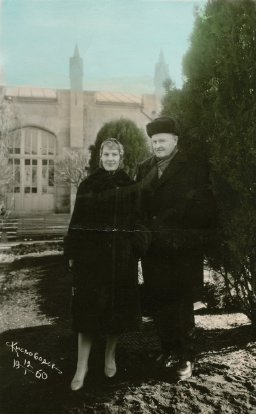

“İzne çıkıyorum. Deniz kenarına gideceğim,” dedim.
“Öyle mi, demek öyle, gidiyorsun ha...”
“Evet Nâzım.”
“Çok mu yoruldun?”
“Yoruldum. Biraz dinlenmek istiyorum.”
“Senin sesinden mahrum kalacağım. Bu hapislik...”
“Yok, zaman rüzgâr gibi geçiyor. Bir bakacaksınız bir ay geçivermiş ve ben dönmüşüm. Moskova’ya dönüyor musunuz?”
“Evet, acele ediyordum hatta biletimi bile ayırttım. Ama şimdi sensiz orada ne yapacağım? Beni unutmayacaksın değil mi?”
“Hayır.”
“Emin misin?”
“Eminim, Nâzım.”
“Sağ ol. Tamam o zaman, canım benim, dinlen çok iyi dinlen! Çok iyi, anladın mı?”
“Gayret ederim tabii, ama neden bu kadar üstünde duruyorsunuz?”
“Gerekiyor, canım. Görürsün. Sana beyaz bir elbise getiriyorum.”
“Ne yapacağım ben onunla?”
Senin sürekli uydurduğun icatlarından biri gibi gelmişti bana ve gülmüştüm. Sen ise ciddiyetini bozmadan yanıtladın beni:
“Beni dinle. Küçük bir kız değilsin. Nişanlı kızlar beyaz elbiseyle ne yaparlar? Evlenirler.”
“Ben yaşadım bunu. Ama doğrusunu söylemek gerekirse elbisem maviydi.”
“Olsun, olsun. Hazırlan...”
Hasretin seni çileden çıkarttığını sanmıştım. Mümkün olmayan bir şeyi dile getirmiştin. Bir ailem; kızım, dürüst bir insan olan kocam vardı. Sinemacılar çevresinde coşkun ve açıksözlü karakteriyle sevilen, mertliği ve ironik yaklaşımları bilinen bir kişiydi. Ona saygım sonsuzdu. Derin edebiyat bilgisine ve sinemadaki ustalığına hayrandım. Ne var ki aramıza yalan girmiş ve dostluğumuz bozulmuştu. Üçümüzün arasında tek dürüst olan ve bu nedenle de en iyimiz olan oydu. Evimize geldiğinde, herkesle selamlaştığın şekilde, onun kollarını tutup “kardeşim” diye hitap ettiğin zamanlar kendimi çok kötü hissediyordum. Kocam açıkyüreklilikle sana bakarken sen bakışlarını ondan kaçırır, normal davranmaya çalışırdın. Ama ne yazık ki kendin gibi olmayı beceremezdin.
İkiniz bir aradayken sizi, birbirleriyle ilgili her şeyi bilen iki iyi insanı izlemek korkunçtu. Biri hırsızlık peşinde, diğeri bakışlarıyla beni sorguluyor ve: “Kahramanının dürüst olmadığını görmüyor musun acaba? Yoksa bu seni durdurmak için yeterli değil mi?” diye soruyordu. Ya ben? Her şeyi görüyor ve anlıyordum. Sevdiğim hırsız olandı. Onun işbirlikçisiydim. Ona aittim.
Senden uzaklaşmaya, kurtulmaya karar vermiştim. Güneye, Yaşlı Tatyana’nın Karadeniz kıyısında bulunan Arhipo-Osipovka köyündeki evine gitmiştik. Çok güzel, sessiz bir yerdi. Kimi zaman Raisa ile ev sahibimizin tavşanlarını besliyor, kimi zaman da dörtlü olarak denize gidiyorduk. Tatile kocalarımızla çıkmıştık. Kocalar önde gider, biz arkalarından yürürdük. Sessizce konuşur, hemen hemen hiç bahsetmezdik senden. Sen imkânsız olandın. Sınır konmuştu.
Kısa bir süre sonra Volpin’le karısı da bize katıldılar. Büyük bir Moskovalı sinemacılar ekibi toplanmış oldu böylelikle. İçlerinden hiç kimse, tek kişi bile içimde neler yaşadığımın, nasıl bir hızla dibe çökmekte olduğumun ayrımında değildi... Soluğum kesiliyor, yok oluyordum. Yirmi dört iş gününe eklenen dört tatil günü boyunca sürecek iznimiz bizi birleştirecek, tembellikle dolduracağımız bu sürede tekrar yakınlaşacaktık. Ve bu zaman diliminde ben tüm gücümü mutlaka, ama mutlaka toplayacak ve sonunda “hayır” diyecektim, “hayır!”
Günler geçiyordu. Bir gün Raisa ile yüzükoyun uzanmış plajda yatıyorduk. Denizin ılık suyu topuklarımızı ıslatıyordu. Etrafımız bizim gibi dinlenen insanlarla doluydu. Konuşmadan öylesine yatıyorduk. Yakınlardan yüksek tonda, heyecanlı bir erkek sesi çalınmıştı kulağıma: “Baksana, ne güzel bir araba!” demişti. Oralı olmamıştım. İçimde fırtınalar koparken etrafta olanlar umurumda bile değildi. Ancak hareketlilik artmış, çevremizdekiler arabayla ilgili fikir yürütmeye başlamışlardı. İşte tam o sırada Raisa korku ve şaşkınlıkla karışık haykırdı:
“Verusya, baksana, Nâzım gelmiş!”
Kafamı kaldırdığım anda seni gördüm. Elli adım ilerimde arabanın açık kapısına yaslanmış duruyor ve kumsaldaki yüzlerce vücudun arasında tanıdık birini bulmaya çalışıyordun. Gözlerime inanamamış, mutsuz olmuştum. İçimden “Ne kötü oldu,” demiştim.
Anımsıyor musun Nâzım, nasıl da hepimizin tatilini bozmuştun?
Bir şey düşünmeksizin aylaklıkla geçirdiğimiz günler son bulmuştu. Transistorların, sinema kameran, yanındaki tüm ıvır zıvır ve asıl önemlisi senin varlığın oradaki dingin yaşamımızı karmaşıklaştırmış ve ortam gerginleşmişti. Etrafında herkes pervane oluyordu. Kadınlar kıyafetlerini değiştirip duruyorlar, erkekler tepeden tırnağa seni gölgede tutmanın yollarını arıyorlardı. Zira senin kadın doktor: “Nâzım’ın teninin bir santimetresi bile güneş ışığına maruz kalmamalı!” diye buyurmuştu. Güneş yakıyordu. Her tarafı kapalı oturan bir tek sendin. Bej rengi pamuklu pantolon, şık gömlek, çorap ve mokasen ayakkabılarınla plajda uzanıyordun. Tüm neşe ve dinçliğine rağmen, bu el değmemiş köy plajında, bir sen böyle hastalıklı ve saçma bir görüntü içindeydin. Istırap çekiyordun. Çıplak kollarıma, bacaklarıma, sırtıma bakmaya alışamıyordun bir türlü. Hatta birkaç yıl aradan sonra beraber yaşamaya başladığımızda Arhipo-Osipovka’da plajda gölgeliğin altında otururken çekilmiş fotoğrafta benim mayolu halimi görünce makası eline alıp bacak kısmını kesmiştin. Herkesin bana baktığını düşünüyordun. Elinden gelse insanların gözünü bağlayacaktın. Herkesin uygunsuz davranışlarda bulunabileceği endişesi içindeydin. Sıkıntı çekiyordun, Nâzım bunu görebiliyordum. Ama senin için ne yapabilirdim ki?
Kendi dertlerimle baş edemiyordum. Etrafımdakiler bir şey anlamasınlar diye senden uzaklaşmak istemiştim. Tüm yaşananlardan rahatsızdım. Benim için de çok kötü bir durumdu. Ve sen asla bana yardımcı olmuyordun. Her dakika bana sesleniyor, üzerime küçük çakıl taşları fırlatıp duruyordun. Denize girmeye yeltendiğimde, korunağından çıkıp etraftakilere bana yaklaşmanın yasak olduğu sinyali veriyordun...
Anımsıyor musun, el fallarına bakıp kadınları eğlendiriyordun. Bu fallarınla tam bir curcuna ortamı yaratırdın. Söylediklerini uydurduğunu biliyordum. Gerçekte sen, avuç içlerini değil, yüzlerini okurdun insanların. Ama kadınlar canı yürekten inanırlardı sana. Birisi ağlamıştı bile. Kadıncağızın ikinci çocuğunun olacağını “okumuştun.” Oysa zavallıcığın doğumdan ödü kopuyordu. Bu olaydan sonra, başka kimseye çocuk ve doğumlu tahminlerde bulunmadın. Güzelliklerin ve masum vaatlerin habercisi olmuştun. Raisa ve güzeller güzeli İrina Volpin’in fallarına saatlerce bakıyor, herkesin ilgi odağında oluyordun. Benim de falıma bakmayı önermiştin. Ben kabul etmedim. Geçmişimi zaten biliyordun, geleceğim ise... Onun için ne söylenebilirdi ki!
Bir keresinde köyün sokaklarında dört kişi –sen ve üç kadın– tembel tembel geziniyorduk. Sen durup şöyle demiştin:
“Şimdi karşınıza bir cin çıksa ve en büyük dileğinizi sorsa ne derdiniz? Unutmayın, cinler çok ciddi adamlardır, söz verdiklerinde mutlaka yaparlar, asla aldatmazlar.”
Aptalca fikirler yürütmeye başlamıştık. Sen kurnaz kurnaz bana bakıyordun. Tam o sırada, doktor kadın öğretmen edasıyla: “Bir elli yıl daha yaşamanızı dilerdim,” dedi. Nazikçe gülümsedin ve Raisa’yla bana dönüp: “Peki, ya siz kızlar?” dedin. Bize söyleyecek bir şey kalmamıştı. Biz de bu dileğe katıldık. Oyun tutmamıştı. Kolaya kaçtığımızı anlamıştın ve:
“Bu kadar sıkıcı bir dilekte ısrar ediyorsunuz demek. Cin fena halde hayal kırıklığına uğradı. Dahası, bana da acıyor. Bir elli yıl dahaymış!” dedin.
Köyün kızgın kumlarında bir o tarafa bir bu tarafa sürüklenirken almıştım ilk hediyemi. Benim ilk şiirimi:
İri bal damlaları gibi arılar,
arılar asmaları taşıyor güneşe,
gençliğimden uçup geldiler,
bu elmalar da ordan
bu ağır elmalar,
bu altın tozlu yol,
bu ak çakıllar dere boyunda,
türkülere inanışım,
hasetsizliğim,
bu bulutsuz gün de ordan
bu mavi gün,
çırılçıplak, sıcacık, sırtüstü yatan deniz,
bu hasret
bu aydınlık dişleri bu kalın dudaklı ağzın
bu Kafkasya köyünde arıların ayağında
iri bal damlaları gibi
geldiler gençliğimden,
bir yerlerde unuttuğum gençliğimden,
bir yerlerde doyamadan.[57]
Zaman zaman, bakışlarını farklı bir hasretin sarıp dumanlandırdığını görmüştüm. Denizin ötesine bakıyor, gökyüzüyle birleştiği çizgide yoğunlaşıyordun tüm benliğinle. Seni izlediğim bir keresinde mucizenin gerçekleştiğine tanık olmuştum: sen orada, karşı kıyıdaydın. Bilmiyordum, orada ne yapıyordun? Belki bu kıyıda yaptığın gibi mekanik hareketlerle denize çakıl taşları fırlatıyor ya da mesafeleri aşıp İstanbul’a ulaşıyor, kalabalığın içine karışıyorsun. Kim bilir, belki küçük oğlunun elini tutuyor veya baklava yiyorsun. Annenin mezarına gitmediğini biliyorum, çünkü daha onun öldüğünü bilmiyorsun. İstanbul’da yitirmiştim seni Nâzım, bulamamıştım. O nedenle, yanına gelip oturmuştum. Varlığımı bile fark etmeyecek kadar uzaklardaydın... Sessizce oturup dönüşünü beklemiştim.
“İşte böyle, cancağızım,” demiştin bana. Topu topu birkaç yüz kilometre...
Ansızın kül gibi olan yüzünde, kırmızı gözkapakların ve derin kırmızı kırışıklıklar, dünya siyasi haritasındaki sınırlar gibi belirginleşmişti. Çok ürkmüştüm. De Buffet’in fırçasından çıkmış kırmızı boyalı, külrengi portrelere benzemiştin. Yaşamın nasıl da güçtü senin, nasıl da güç...
O anda bir cin belirseydi önümde, senin için dilekte bulunurdum ve elli yıl değil, ne kadar istersen o kadar daha yaşamanı dilerdim. Ama yaşamının daha özgür ve daha mutlu olması şartını koşardım.
Başımdan çıkarttığım boneyi, senin denizinin suyuyla doldurup getirmiştim sana, Nâzım. Avuçlarına doldurduğun deniz suyunu yüzüne çarpmıştın. Sular parmaklarının arasından süzülmüştü. Ve sen yinelemiştin, bir daha, bir daha suyla doldurmuştun avuçlarını, yüzünü ıslatmak için. Böylelikle kimse ağladığını fark etmemişti.
“Türkiye’den ayrıldığınıza pişman mısınız?” diye sordum sana.
“Mesele bu değil,” dedin. “Kimi zaman öyle kuvvetli bir özlem sarıyor ki içimi. Hasret (bu sözcüğü Türkçe söylemiştin) yakıyor. Böyle yaşamaktansa o zaman alnına bir kurşun yemek mi daha iyiydi, bilemiyorum. Dilerim, böyle bir hasretlik çekmezsin. Muhacir olmanın ne demek olduğunu bilemezsin. Hatta benim durumumda ve Sovyetler Birliği’nde bile.”
Bahtsız Nâzım... Bahtsız ben...
Denize, kuma, güneşe, elmaya, yıldızlara
alışıyorum gülüm,
iyice alışıyorum.
Denize, kuma, güneşe, elmaya, yıldızlara
karışıp gitmenin zamanı geldi.[58]
Şiirlerini ne zaman yazdığını bilmiyordum. Sabahları erken mi, yoksa akşamları mı bu belli değildi, ama çocuk yazısına benzer yazınla beyaz kâğıda yazdığın şiirleri bana plajda veriyordun. Hatalı ama güçlü ifadelerle kendin çeviriyordun Rusçaya. Daha sonra Muza Moskova’da Rusçaya aktaracaktı onları. Sen gene de günler akıp giderken plajda bize kendin çeviriler yapmıştın.
Rüzgârlı bir güvertede
deniz suyuyla
tel fırçayla yıkanmış
bıranda bezinden gömlek gibi
sırtımda keder.
Ve bu güney köyünde durup dinlenmeden
kızarıp ballanıyor güneş
genç kızlarla kayısılarda[59]
Geçen zaman içinde seni bağışladığımı hissetmeye başlamıştım. Seni gördüğüm zaman yaşadığımın ayrımına varıyordum Nâzım. Gönlüm sana doğru meylediyor, ayaklarım hep senin olduğun tarafa yöneliyordu. Sonunda sen sordun:
“Bağışla beni, gelmemem gerekirdi. Ama yapamadım. Seni mutlaka görmem gerekiyordu. Beni affedebilecek misin?” dedin.
Yanıtım netti:
“Önemli değil Nâzım, mutluyum.”
Biraz bekle Nâzım, konuşturma beni. Beynimde olaylar bölük pörçük. Hafızam tamamen bulanık. Dikkatimi dağıtmamalıyım, beraberliğimizin önemli günlerini saatlerini, dakikalarını göz ardı etmek istemiyorum. Düşününce de hepsi önemliymiş gibi geliyor... Bu tempo daha fazla böyle süremez. Dayanamayacağım artık. Aklımı yitirmemek, zaman tünelinde kaybolmamak için geçmişe dönmek ve beraber yürüdüğümüz yoldaki izlerimizi adım adım takip etmeliyim. Mektup demetini alıyorum. Çoğu zaman bana yardımcı oldular. Bırak bir kerecik daha onlar konuşsunlar. Rastgele seçiyorum birini.
İşte bir mektubun elimde. Hemen bana çevirsin diye Ekber’e göndermişsin. Şiirlerin gücüne nasıl da inanırdın, Nâzım!
“Martılara rastlamadım
balıklar kovalamadı dümen suyunu
ve üç gün üç gece
bulutların önünden
ağır bir keder gibi akıp geçti Baltık denizi
ve ben ordaydım yine sensiz
ve içimde seni itirmenin korkusu
dönüp bulamamak seni
seni ve şehri bulamamak yerinde
seni, şehri ve dünyamızı[60]
Bunu kıza tercüme et ve kartpostalı kendisine ver evladım. Hasretle. Onu tarafımdan öp. Nâzım.”
O zamanlar daha sana gelmemiştim ve sen beni yitirme korkusu içindeydin. Daha çok, daha hararetli ve daha ıstıraplı. İyi. Kork ve bırakma. Hiçbir koşulda ayrılmamalıyız. Her zamanki gibi beraberiz, kocam benim.
“Ve işte ben. Dün sesini işittiğimde dünyanın en bahtiyar insanı oldum. Sürekli bizi düşünüyorum: Seni ve beni. Döndüğümde mutlaka gramer kurallarıyla yazacağım şekilde Rusça öğreneceğim. Seni böylesine sevmek ve adam gibi yazamamak çıldırtıyor insanı! Cancağızım sen yazdıklarımı anlıyor musun? Hastalanmazsam 15’inde, yani Pazartesi buradan ayrılacağım. Pazartesi! İşte bu. Yaz, unutma beni. Bazen, yani her dakika beni düşün. Öpüyorum, mutluluğum benim. Nâzım.”
İşte bir tane de benim müdürümün sürekli şaşırmasına neden olan stüdyoya gelen kartpostallardan biri. Sadece birkaç sözcük yazmışsın: “Herkese selam. Varşova güzel bir şehir, ama Moskova hepsinden güzel. Nâzım”.
Bu zarftan dizeler de çıktı. Türkçe atmışsın başlığını, “hasret” yazmışsın. Bunun anlamını çok iyi biliyorum artık. Hasret sözcüğünde senin uzaklardaki ülken ile benim birleşmiş olmamız hoş bir duygu.
Yüz yıl oldu yüzünü görmeyeli,
belini sarmayalı, gözünün içinde durmayalı,
aklının aydınlığına sorular sormayalı,
dokunmayalı sıcaklığına karnının.
Yüz yıldır bekliyor beni
bir şehirde bir kadın.
Aynı daldaydık, aynı daldaydık.
aynı daldan düşüp ayrıldık.
Aramızda yüz yıllık zaman,
yol yüz yıllık.
Yüz yıldır alacakaranlıkta
koşuyorum ardından.[61]
Birkaç gün birbiri ardına Prag’dan gönderdiğin kartlar gelmişti stüdyoya:
“Prag’dan selamlar. Oyunumuzu seyretmeye geldiğinde böyle görünüyor olacak. Taufer çevirmeye başladı bile. Raisa’ya ve stüdyo’daki tüm dostlara selamlar. Onların hepsini ve seni öperim. Nâzım.”
“Vera! Vera’ya! Vera! Selamlar. Bir kez daha Prag. Dün burada ilginç bir gösteri izledim. ‘Sihirli Laterna’. Belki, bizim oyunumuzu sahneleyecekler. Dostlara selam. Öpüyorum. Nâzım.”
“Prag.
Her şey olumlu gelişiyor. Hasret çekiyorum, yani sürekli. Yakında döneceğim. Herkese selam. Dostları ve seni öpüyorum. Nâzım.”
“Leipzig.
Vera, sevgilim benim. Senden bir güneş (güneş şekli çizili) daha aldım ve kalbimde (kalp resmi çizili) bahar dalı (çiçeklerle bezeli bahar dalı çizili) açıldı. Seni ne kadar sevdiğimi hayal dahi edemezsin. Güzelim, akıllım benim. Mutlaka doğru Rusça yazmayı öğreneceğim. Moskova’da olsam bile sana her gün mektup yazacağım. Sensiz dünya benim için (yerküre alevler içinde çizili) işte böyle. Bin çarpı bin kere eski mektuplarını okudum. Dün akşam sesin çok hüzünlüydü. Sabaha kadar (açık bir göz çizili) gözümü kırpmadım. Çok yoruldun, bense sana yardım edemiyorum. Mutluluğum benim, sana ömrüm boyunca söylemediğim en önemli şeyi söyleyeceğim: Seni seviyorum. Nâzım.”
Altına küçük yazınla düzgün satırlara şu dizeleri yazmışsın:
Koynumda çırılçıplaksınız
şehir akşam ve sen
aydınlığınız yüzüme vuruyor
bir de saçlarınızın kokusu.
Bu çarpan yürek kimin
sesleri soluklarımızın üstünde küt küt atan
senin mi şehrin mi akşamın mı
yoksa benimkisi mi?
Akşam nerde bitiyor nerde başlıyor şehir
şehir nerde bitiyor sen nerde başlıyorsun
ben nerde bitip nerde başlıyorum?[62]
O zamanlar daha şiir yazmanın, hem de böylesi güçlü ve duygu yüklü şiirlerin, ne denli güç olduğunu bilmiyorum. Öyle çok gönderiyordun ki anlamam imkânsızdı. Bazen bir zarftan birkaç tane çıkardı.
Bu sıcaklarda seni düşünüyorum
çıplaklığını
boynunu bileklerini
minderde ak bir kuş gibi yatan ayağını
senin söylediklerini.
Bu sıcaklarda seni düşünüyorum
bilmiyorum aklımda en çok kalan ne
gözümün önüne gelen
boynun mu bileklerin mi çıplak ayağın mı
bana benim olurken söylediklerin mi?
Bu sarı sıcaklarda seni düşünüyorum
bu sarı sıcaklarda bir otel odasında seni düşünüp
yalnızlığımı soyunuyorum
biraz da ölüme benzeyen yalnızlığımı.[63]
Brest şehrinde sınırı aşar aşmaz, Moskova’ya yaklaştığını anlamam, mutlu olmam için telgraf göndermiştin bana: “Brest’ten selamlar. Nâzım.”
Sonunda dönmüştün Moskova’ya. Telefon edip akşam iş çıkışında köşede bekleyeceğini söylemiştin. Buluştuğumuzda şoföre bizim için Ekber’e yeni aldığın evin adresini söyledin. Yüzün bana dönüp sessizce baktın. İlk defa o gün yüzünde mutluluğun yerine acı görmüştüm. Tanrım, hasret seni yiyip bitirmekteydi. Eve girdik, holde kocaman bir kutu duruyordu ve sen onu güçlükle odaya sürümüştün. Sonra açtın onu ve içinden bin bir çeşit oyuncak, birbirinden şirin süs eşyaları, son derece güzel giysiler çıkartmaya başladın. Kısacası, beni mutlu edeceğini düşündüğün ne varsa almış, getirmiştin. Yerde dizlerimin dibinde oturuyordun. Hepsinden çok bana dokunan, iğneden ipliğe tüm detayları düşünmüş olmandı. Hepsine dokundum, hepsiyle oynadım bir süre, gerçekten de beni mutlu etmişlerdi. Sonra geri topladım ve bunları ne beraberimde almamın, ne de kullanmamın mümkün olacağını söyledim. Çalıntı mallar gibi eve götüremezdim onları. Üstelik ilişkimize maddi değerleri sokmak pek çok şeyi mahvedebilirdi...
“Birlikte yaşamalıyız. Sen ve ben, anladın mı?” diye homurdandın. “Biz burada ne flört ediyoruz ne de aşk hikâyesi yazıyoruz. Bu bizim kaderimiz, nasıl oluyor da bunu anlamıyorsun? Seninle ilgilenmek, normal bir erkek gibi sevdiğim avratla yaşamak, aile olmak istiyorum, tamam mı? Üzme beni.”
“Bu konuyu açmayalım lütfen. Biliyorsunuz, bu mümkün değil.”
“Neden cancağızım?” diyerek sesini yükselttin. “Birbirimizi seviyoruz. Dost olanlar bunu anlayacaktır! Mutlu olmamıza sevinirler. Volpin’le konuş, bak göreceksin. O senin dostun, öyle değil mi?”
“Onunla zaten konuştum.”
“E, ne dedi? Her şeyi anlattın mı?”
“Pek bir şey açıklamak gerekmedi. Kendi çoktan anlamış.”
“Ne tavsiye etti?! Ona güveniyorsun değil mi?”
“Sizinle yaşamaya başlamamın aslında yanlış bir adım olacağını söyledi. Yaşam tecrübelerimiz, yaşlarımız ve daha pek çok konuda aramızda ciddi farklılıklar olduğunu anlattı önce, ama sonra dedi ki: ‘Sen, kocanın –unutmadan söyleyeyim, Volpin çok beğenir onu– sevdiği kadınsın, ama mucize değilsin. Oturmuş bir ilişkiniz var. Oysa Nâzım için sen tüm dünya ile eşanlam taşıyorsun. Birbiriniz için ne anlama geldiğinizi daha ikiniz de tam olarak algılayamıyorsunuz. O senin varlığınla, kendine ve sana öyle bir dünyanın kapılarını açacak ki bugün sizin bile öngörebilmeniz imkânsız. O, senin için çizgi dışı bir insan. Tıpkı bizim için olduğu gibi. Ama sen onu herkesten daha iyi tanıdığından, özellikle senin için daha alışılmışın dışında bir adam.’ İşte, bunları söyledi Volpin. Biz birlikte olmalıymışız. O zaman mucize gerçekleşecekmiş. ‘Nâzım’a git,’ dedi bana. ‘Bir Türk’le hem de böylesiyle yaşamak güç olsa gerek,’ diye de ekledi ama. Onun düşüncesine göre her şeye değermiş!”
“Gördün mü? Daha fazla zaman kaybetmemeliyiz. Yoksa günün birinde sen de pişman olacaksın. İnan bana, Verusya.”
“Yapamam, Nâzım. Yapamam. Bu konuyu aklıma bile getirmemeliyim.”
“Sence böylesi daha mı iyi?”
“İyiyi, kötüyü ayırt edemiyorum artık. Bildiğim tek şey var. O da evi terk edemem.”
“Demek onu benden çok seviyorsun? Kusura bakma, bilmiyordum. Yok, hayır. Acıyorsun sadece. Bundan daha kötü olmayacağını anlasana! Bir yandan acıyıp bir yandan aldatıyorsun. Sence böylesi daha mı iyi? Anlat ona her şeyi! Bırak, kendisi karar versin! Seninle beraber olmak istemeyeceğini göreceksin...”
“Bunu da yapamam. İsterseniz siz söyleyin.”
“Ama Verusya, bana da acı. Ben de insanım. Üstüne üstlük doğuluyum. Uğruna ölmeye hazır olduğum kadın benimle değil, bir başkasıyla. İnsan bu yüzden aklını oynatabilir. Verusya, canımın içi, sen skandal çıkmasından korkuyorsun, ama inan bana değmez. Beni düşün, bana yazık değil mi? Benim için de kolay olmadığını bilmelisin, ama ben çoktan her şeye hazırım.Her şeye!”
“Yapamam Nâzım, nasıl biliyorsanız öyle yapın, ne isterseniz söyleyin bana... Ama başkalarının üzüntüsüne neden olan mutluluğa inanmıyorum.”
“Tamam, Verusya. İstediğin gibi olsun. Sadece bil ki böyle olamaz.”
“Ayrılacak mıyız, o halde?”
“Bana bunu mu söylüyorsun?! Şimdi, senden ayrı nefes bile almamın imkânsız olduğu bu durumda! Telefonda sana her şeyi söylemiştim. Dönüşüme dek her şeyi çözeceğini ve bu ayrılığın sona ereceğini ümit ediyordum! Şimdi ise kalkmış, sanki çok korkunç bir şey söylüyormuşum gibi bakıyorsun bana. Sanki canavarın biriyim. Tek istediğim senin iyiliğin. Sana mutlu bir yaşam sunabileceğimi biliyorum. Her konuda uyuşuyoruz seninle. Ah, dünyada benzer durumun ne kadar az olduğunu bir bilsen... Gerçek anlamda beraber çalışabilir, ilginç şeyler üretebiliriz birlikte. Senin yeteneklerini ortaya çıkartabilirim. İnan bana! Redaktörlük, hiçbir zaman yeteneklerini kullanabileceğin bir çalışma olanağı yaratmaz sana... Başkalarının senaryolarını yeteri kadar düzelttin artık. Sen kendin yazabilirsin! Bu işten anlıyorum. Tvardovski[64] de benimle aynı görüşte. Onu otorite olarak kabul ettiğini biliyorum.”
Donup kalmıştım:
“Tvardovski’nin ne ilgisi var konuştuklarımızla?”
“Seyahate çıkmadan önce ‘İki İnatçı’yı bırakmıştım ona. Rus dili açısından nasıl yazıldığını öğrenmekti niyetim. Bugün de dergiye yanına uğradım. Övdü oyunu. Yalnızca üslup açısından iki yere not düştüğünü söyledi. Yani bana inanmalısın cancağızım! Pek çok farklı şehri, pek çok ülkeyi ayaklarının altına serebilirim. Böylelikle kendi ülkeni daha iyi tanıma şansın olur, evimize bir dolu yetenekli, mükemmel insan konuk olur. Sen kendin onlardan söz etmek istersin. Bir düşün canımın içi. Değer bunlara! Doğru söylüyorum değer!”
Gel Nâzım, seninle ayrı yaşadığımız o son güze geri dönelim... Ne seni dinlemiş ne de seninle beraber yaşamayı kabul etmiştim.
“Dayanamayız buna. Ölüp gideriz,” demiştin.
Şimdi komik geliyor, ama ilk hastalanan ben olmuştum.
Aniden ateşim çıkmıştı. Son derece bitkindim ve uykusuzluk çekiyordum. Hızlı hızlı atan kalbimi dinleyen doktorlar, muayene sonunda sol ciğerimde bir iz görmüşler ve: “Ne oldu size böyle? Altı ay önce sağlığınız mükemmeldi,” demişlerdi.
Ne o zaman ne de daha sonra, 17 Ekim’in ertesinde işten kovulduğumu sana söyleyememiştim, benim mükemmel insan Nâzım’ım. Senin yüzünden kovulmuştum.
17 Ekim, kara gün. Henüz stüdyonun eşiğinden adımımı atmıştım ki annem aramış ve telaş içerisinde, tutarsız ifadelerle İzvestiya gazetesinde Nâzım Hikmet karşıtı bir makalenin olduğunu söylemişti:
“Onun kötü birisi olduğunu ve Sovyetler Birliği’ne karşı çıktığını yazıyorlar!”
Ölesiye korkmuştu. Tehlikeli insanla dostluğum yüzünden başıma bir şey gelmesinden endişeleniyordu.
Yüreğime düşen ateş parçasıyla kendimi kütüphaneye attım. İzvestiya’da “Çitteki Gölge”[65] başlıklı makaleyi bulmam hiç de zor olmadı. Fransız gazetesi Léttres Francaises’de yayımlanan ve büyük usta Meyerhold’u[66] savunduğun yazıdan yola çıkarak sana iftira atma fırsatını değerlendirmişlerdi. Senin kamuoyunun desteğiyle Meyerhold’un itibarının iadesi ve adının unutulmaktan kurtarılması adına yaptığın ses getiren girişimlere uzun zamandır öfkelenen resmi otoriteler, bu amacın doğrultusunda batılı basını kullanman karşısında çileden çıkmıştı. Makalenin üslubu düşmanca ve kabaydı. Olayların çarpıtılmış olduğunu sonradan öğrendim.
Annemden farklı olarak, o zaman anlamadığım bir diğer konu, böyle bir yazının yayımlandığı hükümetin resmi gazetesinde Hruşçev’in damadı Adjubey’in genel yayın yönetmeni olmasının ne anlama geldiğiydi.
İki gün sonra beni stüdyonun müdürü çağırmıştı. Senin yurtdışından gönderdiğin kartpostalları ince ince evirip çeviren ve son derece kaypak bir insan olan personel müdürü de odadaydı. Herhangi bir açıklama yapmadılar. İstekleri odadan dışarı çıkmadan istifa dilekçemi yazmamdı. Aksi takdirde, başlarına türlü tatsızlıklar gelecek ve beni kendileri kovmak zorunda kalacaklardı. Böyle bir durumda hakkımda yazacakları raporla hiçbir kuruluşta iş bulamayacaktım.
“Nedeni mi? Nâzım Hikmet’in ideolojik açıdan sakıncalı olan senaryolarını yazmasına katkıda bulunuyorsunuz. O pasifist ve ülkemize iftira atıyor!”
“Bu doğru değil! Siz bir şey bilmiyorsunuz,” dedim.
İstedikleri dilekçeyi önceden hazırladıkları kâğıda yazdım. İş arkadaşlarıma istifa ettiğimi söyledim ve daha onlar detayları öğrenmeden, insani amaçlarla küçük çocuklara iyilik öğretmeyi amaç edinmiş stüdyoyu alelacele terk ettim.
Başıma gelenleri sana anlatmadım. Yönetimde farklı düşüncelere tahammülleri olmayan kahpe insanlar olduğunu ilk kez o zaman algıladım. Belki de beni düşürdükleri durumla seni kışkırtmak, skandal çıkartmanı tetiklemek, dahası en basit gerçeklerin bile fısıltıyla konuşulduğu ülkeden gitmeni sağlamaktı amaçları.
Gene bu olaydan sonra anladım ki korunması gereken ben değil, sendin. Seni belalardan uzak tutmak gerekiyordu. İşte bu nedenle, hastalığımın nedenini senden sakladım. Sağlığım kaldıramamıştı bu olanları. Nereden bakarsan bak, ömrümün yetişkin döneminin ilk önemli darbesiydi bu. O dönemde yanımda olduğun için sana minnettarım.
Bir şeylerin ters gittiğini öğrendiğinde korkuya kapılmıştın. Ünlü doktorlara götürmeyi önerdin, mucizevi ilaçlar bulmak istedin. Hepsini reddettim. Derdimin ne olduğunu biliyordum, ama bunu doktorlarla paylaşmam olanaksızdı.
Hastalığım, bir ay, iki ay, üç ay derken uzadı... Hemen hemen her gün geliyor, uzun süre yatağımın ucunda oturuyor, beni oyalamaya uğraşıyor, çalışıyordun. Hastalık ortamının gerginliğinde beklemiştin İzvestiya’ya yazdığın yanıtın yayımlanmasını. Oysa ne o zaman ne de sonra yayımladılar.
Ortak dairemizde gündüzleri kimse olmuyordu. Herkes işteydi. Tam bir sessizlik. İlk kez o zaman nasıl şiir yazdığına tanık oldum. Makalelerinin çevirilerine yardımcı oluyordum. Yalnız çalışmaktan asla hoşlanmıyordun, yanında insanların olması seni rahatsız etmiyordu. Sık sık Ekber’le beraber geliyordunuz. Uyduruk hikâyelerle beni güldürürdünüz. İçine düştüğüm ruhsal ve bedensel çöküntüden kurtulmam için elinden geleni yapmıştın. Beni sarıp sarmalayıp polikliniklere götürmüş, sanki Ay’a gönderilecekmişim gibi detaylı muayene etmelerini istemiştin. Sonuçları sana bildirmişlerdi.
Gerçek anlamda sana o dönemde âşık olduğumu sanıyorum. Rolleri değişmiştik. Senden daha güçsüzdüm ve sen ruhunun derinliklerinde, bir yerde bundan memnunluk duyuyordun.
Bir gün akşama doğru gelmiştin. Komşumun kapıyı açmasının ardından ayak seslerini dinledim. Her zamankinden daha yavaştılar. Odamın kapısını zorlukla açıp girmiştin içeri. Pembe krizantemlerle dolu kocaman bir sepet vardı kucağında. Onu yere koyup koltuğa bıraktın kendini. Ne kadar sessiz kaldığımızı anımsamıyorum. Merhabalaşamamıştık bile.
Sonra o koca sepeti camın kenarına taşımak istediğimde yerinden bile oynatamamıştım. Kımıldatmak imkânsızdı. Korkuyla bakmıştım sana. Nasıl getirmiştin onu yukarıya kadar? Üstelik asansör de yoktu.
Güçlükle zafer kazanmış bakışların yanıtlamıştı beni.
“Aşağıdan buraya kadar kendim taşıdım. Tüm merdivenler boyunca bırakmadım,” demiştin gülümseyerek.
“Neden ki? Şoförünüz yok mu bugün?”
“Senin için bir şey yapmak istedim, anlıyor musun, mutluluğum benim! Benim gibi aptal adamların böyle tuhaflıkları vardır. Benim için gelip geçici bir heves olmadığına inanmanı, uğrunda ölmeye hazır bir duygu olduğunu anlamanı istiyorum. İyi anla bunu! Gerçekten sana vurgunum.”
Bunları dedikten sonra susmuştun. Kalktım, ışığı açtım. Sepeti iterek camın önüne götürdüm.
“Biliyor musun, seni muayene eden başhekim bana: ‘Onu seviyorsunuz. Ama endişelenmenize gerek yok. Onu iyileştireceğiz ve Tanrı izin verirse torunlarının torunlarını görecek kadar yaşayacak,’ dedi. Sonuçları bu kadar iyi değerlendirdiği için ona inandığımı söyledim. Senin hakkında bir şeyler öğrenmeyi öyle istiyordu ki...”
“Eminim siz de: ‘O benim redaktörüm, ayrıca birlikte oyun yazıyoruz. Onun yardımıyla Sovyet insanıyla ilgili oyunlar yazmak ve para kazanmak için iyileşmesini arzu ediyorum,’ demişsinizdir.”
“Evet, söyledim. ‘Onunla evlenmek istiyorum,’ dedim. Biz Türkler haremimize ilk koşul olarak cılız, ikinci koşul olarak da hastalıklı kadınları almayız. Bizim anlayışımıza göre, kocaları sakin sakin dinlenebilsin ve hoş şeyler düşünebilsin diye, kadınlar çalışkan ve becerikli olmalıdır. Kocaların kahve içmesi, neşelenmek için biraz rakı içmeleri, nargilelerini fokurdatmaları ve uzun ipek yastıkların arasında yumuşak halılara uzanmaları buna bağlıdır.”
“Uzun ipek yastıkların arasında uzanırken neler düşünür peki?”
“Birincisi, neler düşündüğünü karısı sorma cüretinde bulunmasın diye onu nasıl idare edeceğini; ikinci olarak, arkadaşlarıyla kahvelerde güzel bir akşam geçirmeyi ve gecenin geç vakti eve gelince, karısının onu güler yüzle karşılamasını...”
“Aman ne güzel...”
“Ancak böyle yürür bu işler. Yoksa asık suratlı, sürekli söylenen tek bir kadın yüzünden insanın kendini asması mümkünken, koca bir harem nasıl idare edilir? İşte bizde böyledir cancağızım, geleneklerimiz eski, karılarımız gençtir.”
Bir daha gelmedin. Ne ertesi ne de daha sonraki gün...
Birkaç gün sonra biri telefon etti ve resmi bir ses tonuyla Nâzım Hikmet’in ağır zatürree teşhisiyle hastanede yattığını söyledi.
Boş, tatsız hastane günleri başlamıştı. Ender olarak telefon çalıyor ve birileri bilgi veriyordu:
“Hastamız yoldaş Nâzım kendisini iyi hissettiğini iletmemizi istedi. Kaygılanmamanızı rica etti.”
“Ateşi yüksek mi?”
“38 civarında. Tedaviye güç yanıt alınıyor. Antibiyotikler ters etki yapıyor.”
“Uykusu nasıl?”
“Çok kötü, hemen hemen hiç uyuyamıyor.”
“Morali nasıl?”
“Sinirli, huzursuz. Görüşme yasak. Durumunda kötüleşme öngörülmüyor. Hastaya iletmemizi istediğiniz bir şey var mı?”
“Evet, ona deyin ki... deyin...”
“Oldu, anlaşıldı. Hoşça kalın.
“Dıt... dııtt... dıtttt...”
“Hoşça kalın...”
Tek başıma, şiirlerinle kalmıştım. Eğer elimden gelseydi ben de sana aynılarını yazardım:
Sen benim sarhoşluğumsun
ne ayıldım
ne ayılabilirim
ne ayılmak isterim
başım ağır
dizlerim parçalanmış
üstüm başım çamur içinde
yanıp sönen ışığına düşe kalka giderim.[67]
Bensizlik zor mu Nâzım? Zor, biliyorum.
Yermolova Tiyatrosu’nda oyunumuz “İki İnatçı”nın provalarında bilgin Aleksey Petroviç her gün ölmeye başlamıştı. Aktör Vsevolod Yakut oynuyordu rolü. Bu canlandırmada senin o kadar çok özelliğini öğrenmiştim ki... Henüz finali yeniden yazmak için geç değildi, ölümü değiştirip başka bir çıkış yolu bulabilirdik. Ne olabilirdi ki bu?
Karanlık salonda tek başıma oturmuş, dişlerimin arasındaki kalemi kemiriyordum. Sahnede hastane odası. Aleksey’in son monologu başlayacaktı. Ben artık ipin ucunu kaçırmıştım. Oyun nerede, yaşam hangisi, sen ve aktör bu ikilemin neresindesiniz, ayrımına varamıyordum. Senin sözlerin, sana ait olmayanlarla birlikte başkasının ses tonu ve tonlamasıyla yankılanıyordu kulağımda.
Aleksey Daşa’nın elini tutmak istiyordu. Daşa uzatıyor, Aleksey gözlerini açıp öpüyordu uzanan eli. Hem sahnede hissediyordum kendimi hem de oturduğum yerde. İkimizden başka kimsenin bilmediği yaşamın başka bir boyutundaydım. Aslında, sen benim elimi öpüyordun. Vsevolod Yakut yalnızca senin yüreğinin sesini dinliyor, hareketlerini sahneye yansıtıyordu.
Gözlerimi kapatmıştım. Son dört gün senden bir haber almadan geçmişti. Belki de şimdi, şu anda...
Sen ise hastanede ortalığı kasıp kavurmuştun. Partiyle ilişkilerini, barış mücadelecisi olduğunu ve daha aklına gelen pek çok gerekçeyi öne sürerek odana telefon bağlatılmasını istemiştin. Taleplerinin ardı arkası kesilmemişti.
Sonunda hastane yönetimi teslim olmuş ve odana telefon bağlanmıştı ve sen her yarım saatte bir bana telefon etmeye başlamıştın. Ama yarı resmi, biraz farklı bir şekilde konuşuyordun. Hastane odasını yaşlıca bir adamla paylaştığını ve ondan çekindiğini sonradan öğrenmiştim. Telefondan sonraki hedefin bu oda arkadaşından kurtulmak olmuştu. Ama nasıl yapacaktın? Sonunda çareyi, doktorlara adamın horladığını ve bu nedenle uyuyamadığını söylemekte bulmuştun. Adamcağızı apar topar başka bir odaya almışlardı.
Son haftalarda yüreğinde biriken tüm sıkıntıyı boşaltmak istercesine “Özgürlük” diye haykırmıştın telefonun ahizesine. Sonra yanıtlarını kendin verdiğin yüzlerce soru sıralamıştın. Konuşmuş, konuşmuş sonunda içini boşaltmıştın. Yeni hedefin hastaneden kurtulmaktı. Gerçekten de kaçacağından korkmuştum.
Hastalığın iki ay sürmüştü Nâzım. Keder ve endişeyle dolu sonu gelmez iki ay.
Sonunda, Yermolova Tiyatrosu’nun tıklım tıklım dolu salonunda oyunumuz “İki İnatçı”nın ilk gösteriminde ayrılığımız sona erdi. Oyuna adını sen vermiştin. Çok da hoşuna gitmişti.
Bu buluşmayla ilgili pek çok ayrıntı silinmiş belleğimden. Tuhaf. Beni ne zaman gördüğünü, nasıl yanıma geldiğini, ilk olarak ne söylediğini anımsamadığıma göre ne haldeydim kim bilir? Kahverengi takım elbiseni, yeşil yumuşak kumaştan gömleğini, bükme ipek düğümlerle dokunmuş izlenimini veren bej kravatını ve masmavi gözlerini anımsıyorum... Bir de losyonun kokusunu. Sözcüklerse kayıp. Belki de dilimiz tutulmuştu o an, olabilir mi?
Fuayede birbiri arkasına insanlar akın akın yanına gelmiş ve hızla sımsıkı kocaman halkalar oluşturmuşlardı çevrende. Alışıldığı gibi ilk gösterime tiyatro çevresinden birbirlerini tanıyan insanlar ve sanat kurulu üyeleri gelmişti. Kadınların elini öpüyor, erkeklerle kucaklaşıyor, şakalar yapıyordun. Tüm bu rahat ve şen görüntünün arkasında heyecanın ve bitkinliğin seziliyordu. Ayaklarının üstünde güçlükle durduğun izlenimine kapılmıştım.
Daha tedavin sonuçlanıp doğru düzgün iyileşmeden, kendini tiyatroya zorlukla attığını sonradan öğrenmiştim Nâzım. Üçüncü zilden sonra ikinci sırada yanıma oturuşunu ve elimi sıkıp sessizce “Vera, Vera, Vera,” dediğini anımsıyorum. “Bu anı ne kadar hayal etmiştim. Sense olacağına inanmamıştın. Bana inanmaman çok yazık, canımın içi.”
Görevli kadın oyunun programını getirmiş ve kucağımıza rejisörün sürprizini bırakmıştı. Açtığımızda içeri kıvrılmış sanat sayfalarında karşılıklı basılmış portrelerimizi görmüştük. Fotoğraflarımız birbirine bakıyordu. Çok mutlu olmuştun:
“Gördün mü, ne güzel düşünmüşler!”
Perde açılmıştı. Arkadan yaşlı ve öfkeli bir kadın sesi: “Yurttaş, susar mısınız, artık,” demişi sana. “Affedersiniz, cancağızım, affedersiniz,” olmuştu yanıtın.
Oyun başlamıştı. Artık, oyundan başka bir şey görmüyor ve duymuyorduk. Oyuncular en az bizim kadar heyecanlıydılar. Yüzleri ışıl ışıl oynamışlardı. Salonda heyecanımızı daha da arttıran tam bir sessizlik hâkimdi. Oyunun bitiminde muhteşem bir alkış koptu ve sonra sanat çevresinde sonu gelmez tartışmalar başladı. Zarif, tumturaklı konuşmalar, sözler, sözler, sözler...
Bizi kötü anlamda eleştirmediklerini anımsıyorum. Ama her öneri, basit bir eleştiri bile seni ciddi olarak yaralamaya yetiyordu. Hiçbir şeyi kabul etmemiş, şiddetle karşı durmuştun. Kimse, seni profesyonel çerçevedeki eleştirilerden çok “Nâzım Hikmet’in oyunu” söyleminin öfkelendirdiğini aklına bile getirmemişti.
“Neden Hikmet’in oyunu? Bu piyesi biz Vera Tulyakova ile birlikte yazdık!” diye yırtınıp durmuştun. Ne var ki sanat komisyonu üyelerinin hemen hemen hepsi soyadımı o gece ilk kez duymuşlardı ve: “Nâzım Hikmet’in oyunu” diye yinelemeleri doğaldı.
Sen ise bundan dolayı acı çekmiştin. Benim için bir başlangıç hazırlamıştın. Benim için düşündüğün şenlik havasına herkesin uymasını istiyordun. Gelecekteki ortak çalışmalarımız için tasarladığın iyimser, çekici program, beni tiyatro yazarlığına adamış olman, çevrendekilerin bu tavırlarıyla suya düşmüş gibi gelmişti sana. Yanındakiler öfkene bir anlam veremiyorlardı. Oyunu övülen bir yazarın böyle hiddetlenmesine akıl erdirememişlerdi.
“Toplantıdan sonra kaçıp gitme hemen. Seninle konuşmam gerek. Bir yere oturup sakince konuşuruz. Tamam mı?” diye fısıldamıştın kulağıma.
Ve oturumun sonunda onaylanmıştı oyun. Elimden tutup sürüklercesine çıkarmıştın beni tiyatrodan. Az ilerideki “National” kafeye varmak için sokakta koştuk adeta. Çoktan dolu olduğu için kapalı olan kafenin kapısını kırarcasına çalıp açtırmayı başarmıştın. Ve gene kendine özgü yöntemlerle, iğne atsan yere düşmeyecek kadar dolu salonda bir masa ayarlamıştın bize.
Daha ben kendime gelmeye fırsat bulamadan “Vera, bu cehennem hayatına bir son vermelisin artık,” diye başladın söze:
“Sen bana inanmıyor musun? Bir şeyden mi korkuyorsun? Yeter artık! Hepsinin canı cehenneme! Yeter! Sensizlik öldürecek beni. Ölüyorum bile. Böyle olmasında suç bende mi yani? İkimize de acıyorsun, biliyorum. Ama anla, mutluluğum benim, bir tanecik Verusyam, ikimizden biri...”
Tam da bu sırada, “Vay, sevgili Nâzım! Ne güzel sürpriz,” diyen ve nereden çıktığını anlamadığımız, kafayı bulmuş iri kıyım bir adam, üzerine atılıvermişti senin. Sanki yıkılmakta olan koca bir sütunu tutarcasına kucaklamıştı seni. Sonra biraz gerilemiş, yeniden coşkuyla seni koca göğsüne bastırmış, diğer eliyle de sırtına sırtına vurmuştu. Boynuna doladığı elindeki konyak kadehi çalkalanıp duruyordu. Kendini kurtarmaya çalışmıştın, ama boşunaydı. Senden daha güçlü ve iri bir adamdı, ama asıl önemlisi seni bırakmaya hiç niyeti yoktu. Sürekli: “Beni hatırladın Nâzım, hatırladın değil mi?” diyordu. Hadi karşılaşmamızın şerefine içelim. Enternasyonale, komünizmin gerçek zaferine içelim. Hadi!”
“Memnuniyetle. Ama şimdi biraz meşgulüm. Başka sefer içeriz.”
“Olur. Tamam. Anladım, sen burada... anladım yani, tüyüyorum,” dedi ve masaların arasından salonun derinliklerinde sallana sallana kayboldu.
Uzaklaşan adamın ardından dehşetle bakmıştın. Adamı tanıyıp tanımadığımı sordun bana. “Hayır” dedim, tanımıyordum. Kaldığın yerden sürdürmüştün konuşmanı:
“Bana gelecek misin? Ha? Geliyorsun değil mi, söyle!”
Ben susuyordum.
“Sen kendin böyle yaşamayı daha fazla sürdüremezsin. Beni seviyorsun. Bunu görüyorum. Bu çileye daha fazla dayanamazsın!”
“Evet, dayanamam.”
“Biliyorum. Şu andaki yüzünü bir görsen! Verusyam benim, bence sen gerçeği bir kez ve sonuna kadar itiraf etmeye korkuyorsun. Korkman gerekmez, cancağızım. Bu işi çözmelisin. O genç bir adam. Zor gelecektir kuşkusuz, ama alışır. Bense üstesinden gelemem. Ölürüm. Şantaj yapmıyorum, gerçeği söylüyorum sana. Ölüp gideceğim, o zaman her şeyi anlayacaksın. Senin için korkunç olacak. Şimdi sana engel olan, bu kadar önemli olan konuların yaşamın zorluklarından sadece biri olduğunu anlayacaksın. Daha fazlası değil! Ve o zaman kendini bağışlamayacaksın, mutluluğum benim; çünkü bir adam havasızlıktan ölmüş olacak. Ve o hava, sensin.”
“Nasıl terk edeceğim? Beceremiyorum, bilemiyorum, anlıyor musunuz...”
“İyilikle... Yoksa mutluluk olmaz...”
Az önceki “tanıdık” yeniden belirmişti önünde. “Nâzım, dostum, gel birbirimize sen demenin şerefine içelim,” diyordu bu sefer. İpteki cambaz gibi sallanarak güçlükle dengesini sağlıyordu. İki elindeki konyak kadehleri de onunla beraber sallanıyorlardı. Daha fazla dayanamamış: “Yoldaş, yeter artık,” diye sesini yükseltmiştin. “Ne oldu şimdi?” diyen sarhoş gücenmişti. “İnsan kendi dostuna böyle yapar mı? Hadi Nâzım dikelim şu kadehleri!”
Adamın inadından aklını kaçırmak üzereydin. Sonunda bir dikişte içtin konyağı. Kucaklaştınız adamla. Kendinizce dostane bir şeyler söylediniz birbirinize. Kendini adamdan kurtarır kurtarmaz aceleyle sordun:
“Vera, ne zaman gelebilirsin bana? Evdeki işlerini yoluna koyman için kaç güne gereksinimin var?”
“On gün,” diye döküldü ağzımdan sözcükler. Oysa hiç düşünmemiştim.
“On gün mü?” diye kükremiştin Nâzım. Bir yandan da “dostuna” bakıyordun. “Neden bu kadar çok,” diye sordun. Tekerleme söyler gibi hızlı hızlı konuşuyor, bir yandan da etrafı gözetliyordun.
Santral memuresinin süre doldu uyarısı üzerine telefon konuşmasını bitirir gibi bir halimiz vardı.
“Tamam, oldu. On gün olsun. Hemen Moskova’dan ayrılırız. Sıcak bir yerlere gideriz. Sonra ortalık sakinleşince döneriz, beraber yaşamaya başlarız. Çok çalışacağız. Bunu biliyorsun değil mi, çok çalışmamız gerek. Her anlamda yaşama yeniden başlayacağız, sıfırdan. Anlıyor musun? Her şeye noktayı koydum. Kır evini Yazarlar Birliği’ne geri veriyorum. Arabayı verdim bile. Sadece tabloları, el yazmalarını, kitaplarımı alıyorum... Bu zavallı Nâzım’ı kocalığa almaya razı mısın?”
“Teşekkür ederim, Nâzım. Bu kararınla beni çok mutlu ettin. Bu benim açımdan pek çok şeyi kolaylaştıracak.”
“Anlaştık. Bir daha görüşmeyelim. Tam on gün sonra seni alacağım ve doğru tren istasyonuna götüreceğim. Oradan yolculuğumuza başlarız... Çok mutlu olacağız, göreceksin bak... Yapacağım bunu, gidelim şimdi. Seni son kez taksiyle evine bırakayım. O yoldan nasıl nefret ettiğimi bir bilsen! Şükürler olsun ki bu son kez olacak. Yoksa yüreğim çatlayacaktı bir gün evinin yolunda. On gün... Senin sesinden yoksun on gün. Yarın olunca vazgeçmezsin değil mi? Bana söz verdin. Yemin et vazgeçmeyeceğine. İğrenç, ayıp bir şey bu istediğim, ama rica ediyorum yemin et! Kızının üstüne, annenin üstüne, yalvarırım! Korkularımdan kurtulayım, lütfen.”
“Söz veriyorum Nâzım.”
“Vera!”
“Yemin ederim...”
İçimde her şey ikiye bölünmüş, birbirinin uzlaşmasız düşmanı. Yaşanmış yıllarım Çin Seddi boyunca dizilmiş sanki. Her biri itiş kakış içerisinde, diğerine yol vermeden öne çıkmaya çalışıyor. Anılar, gözlerimin önünden öylesine yoğun akıp gidiyorlar ki başka bir şey görmeme olanak yok. Yiyorum, ama tat alamıyorum. Uyuyorum, ama asla dalamıyorum. Evden çıkıyorum, ama her zaman benliğim içeride kalıyor. Düşüncelerim sonuçlanmıyor, hep yarıda kalıyor. İsteklerimin yalnızca yarısı gerçekleşiyor. Tüm beklentilerim geçmişe yöneliyor.
İçimi ümitsizlik kaplayıp yaşama gücümü yitirdiğimde, yaşamımın en zor anlarını anımsıyorum. Gücü orada, o güçlükleri alt ettiğimiz anlarda bulmaya çabalıyorum. İzlerimizi takip ediyorum...
O kış akşamında yanımda küçük bavulum kaldırımın kenarında durmuş seni bekliyor, bir yandan da düşünüyordum: “Ne diye evi toplamadan çıktım sanki, tozları alsaydım, yerleri silseydim... Geri dönüp yapmalı mı ki!..” Oysa kımıldayacak gücüm yoktu. Seni bekliyordum. Ve sen gelmiyordun. On dakika, on beş dakika, yirmi dakika.
“Ben gecikince ne düşündün?” diye sormuştun bana trende.
“Kendi kendime: ‘Tanrım, ne olur, bir şey olsun da gelmesin,’ dedim.”
“Ne, mesela? Trafik kazası mı, arabayla bir şey mi, ha?”
“Olabilir...”
“Ne diyebilirim ki, muhteşem bir nişanlım var!”
“Orada, sokakta ölecektim neredeyse. Bir de öncesindeki on gün var. Hayatımda ilk kez ihanet ettim...”
“Evet, anlıyorum. Diğer yandan ilk defa bir insanı kurtardığını düşünmedin ama değil mi?”
“Düşünmedim.”
Yaşamımız nasıl bitti? Nereden başlamıştık ona? O Ocak akşamında, Moskova’dan kaçış günümüzde peronda, trene binmeden önce bana dediklerini anımsıyorum.
“Aç avucunu Vera, sana düğün hediyesi vermek istiyorum.”
Avucuma tahtadan yapılmış, kuyrukları havada on üç küçük kara kedi koymuş ve:
“Yaşamımıza başlamamız kolay olmayacak. Pek çokları çeşitli yöntemlerle, dedikodular, laf taşımalar, uyduruk şeylerle mutluluğumuzu bozmaya çalışacak. Tüm bunlara hazır olmalısın. Uzun sürmeyecek bunlar, ama olacak. Güçlü ve sakin olmanı istiyorum. Sana ve yaşamına yönelen tüm kötülükleri bu kediler toplasın,” dedin.
Evet, Nâzım, anımsıyorum. Moskova’dan nasıl kaçıp gittiğimizi asla unutmayacağım. Trene binmiş, kompartımanda baş başa kalmıştık... Çok uzun sürmüştü suskunluğumuz. İkimiz de gerçekte rüya gördüğümüzü sanmıştık.
Biletimiz Kislovodsk’aydı. Orada bizi bekleyen tek şey geleceğimizdi. Hediyeni avucumda sımsıkı tutuyor, heyecandan konuşamıyordum. Sen de sessizdin. Öylece elimi tutuyordun. Yavaşça parmaklarımı açtın ve kedicikleri düzeltip pencerenin önüne koydun. Sonra kızıla çalan çantanı masanın üstüne koydun. Bütün eşyan buydu. Çantayı açıp içindeki para yığınını gösterdiğinde çok korktum.
“Burada tam kırk beş bin ruble var.”
Bu benim için akıl almaz bir miktardı. Eski işimde bu parayı kazanmam için kırk beş ay çalışmam gerekirdi. Neredeyse dört yıl...
“İşte. Bugün itibariyle elimizde olan bu. Bir bu kadar da taşınması ve evini tamir ettirmesi için doktora bıraktım. Memnun olacağını sanıyorum. Daha önceden de her ay maaş vermek zorunda kalmayayım diye yüz bin vermiştim. İlk yıllarda kendim bile burada zengin bir adam olduğumu bilmiyordum. Paramız bitene kadar seyahat ederiz seninle. Birkaç gömlek, birkaç çift çorap ve mendil almam gerek acilen. Bütün gardırobum üstümde Hanımcığım! Karıcığım benim. Alış artık, senin kocanım, Allah kahretsin!”
Ardından kompartımanın kapısını açtın ve uluslararası vagonun[68] koridorunda bağırdın:
“Karıma çay getirin lütfen!”
Tren rayların üstünde ilerliyor, yüreğim trenin temposuyla aynı atıyordu.
“Kislovodsk’ta kalacağız. Kışın da güneşlidir orası. Otelde yer bulacağımızı sanıyorum. Sonra seni Bakû’ye götüreceğim. Türkiye değil tabii orası, ama pek çok yönden benzer. Türkiye’ye gitmemiz yasak, biliyorsun. İki, üç ay sonra herkes, sonsuza dek benimle yaşayacağını kabullendiğinde döneriz. Moskova’daki eve yerleşiriz. Eşyalar çok güzel değil, ama gerekli her şey var. Zamanla para kazanır, yenilerini alırız.”
Balayı. Kislovodsk. Biz – kaçaklar. Takip edildiğimiz hissi bırakmıyor yakamızı. Beni özellikle. Ya seni Nâzım?
Eski iki katlı bina olan şehrin tek otelinde nedense bize yan yana iki oda vermişlerdi. Herkese ayrı bir oda. Koridor düzenli ve temizdi. Orada kimsenin bizi tanımadığını düşünüyor, sakin ve sessiz kalacağımızı sanıyorduk. Her şeyden çok isteğimiz, kimsenin bize engel olmaması ve beraber yaşamaya alışmamızdı.

Nâzım Hikmet ve Vera, Kislovodsk’tayken (12.01.1960)
Sabah balkonun altından gelen boru sesiyle uyandık. Borazancı tüm gücüyle çalıyor, birtakım çocuk sesleri de canlı bir şeyler söyleyerek tempo tutuyordu. Bu gürültü karşısında şaşıp kalmıştın. Çocuklar bağırdıkça bağırıyor, borazancı üfledikçe üflüyordu. Kendini daha fazla tutamayıp balkona çıktın. Gördüğün manzara şaşırtıcıydı. Bir pioner birliği[69] başlarında öğretmenleriyle gelmişler ve coşkuyla seni selamlıyorlardı. Meğerse yerel gazetede Nâzım Hikmet’in şehre geldiği ve otelde kaldığı haberi çoktan çıkmıştı. Öğrenciler seni okullarına davet etmek için gelmişlerdi. Birkaç dakika sonra hepsi odana doluştular ve sen sonunda gitmeyi kabul ettin. Çocukları reddetmeyi asla beceremezdin.
O günden başlayarak olaylar birbirini takip etti. Sanki turneye çıkmış gibiydin. Güneyliler şenlikleri seven insanlar. Hepsi seni görmek istiyor, davet ediyordu. Gerçek bir panayırın içine düşmüştük, bir dakika olsun yalnız kalmamıza olanak yoktu. Üç okulu ziyaret etmiş, Narzan Galerisi’ni gezmiş, bir kadınlar organizasyonunda bulunmuş, komşu il Pyatigorsk’tan gelen okurlarınla buluşmuştun. Talepler birbiri ardına ekleniyor, kabul etmezsen son derece alınıyorlardı. Bu kutsal ziyaretlere daha fazla dayanamadık ve şehrin uzak mahallerinden birinde yaşayan iki yaşlı karı kocanın evinde bir oda tuttuk. Orada, sessiz sakin birkaç hafta geçirdik. Cennetteydik. Mükemmel şiirlerini “Vera’nın Uykudan Uyanışı” ve başkalarını orada yazmıştın.
Bir keresinde dolaşmaya çıktığımızda, sokakta durmuş bir şeyler tartışan kalabalığı görmüştük. Yanlarına gittiğimizde şehre ilk kez muz getirdiklerini anladık... Hiç kimse ne olduğunu anlamadığından satın almak istemiyordu. Kar yağıyordu üstlerine.
Satıcı kadın açıklamaya çalışıyor ve: “Patatese benziyor, yani tatlı patatese,” diye açıklamaya çalışıyordu.
Sen muzları görünce çok mutlu olmuştun. Hemen birkaç kilo alıp oradaki insanlara ikram ettin. Birkaç dakika içinde elindekilerin hepsi tükenmişti.
Muzun tadına varan kalabalık ise itiş kakış içinde satıcının önünde kuyruk oluşturuvermişti. Sen dışarıda kalmıştın.
“Yoldaşlar, affedersiniz ama, ben kendim tadamadım bile. Müsaade edin de bir daha alayım,” dedin.
Kuyruktakiler yüce gönüllü insanlardı. “Gerekmez,” dediler sana. “Biz alır size geri veririz.” Sense satın almakta kararlıydın: “Bugün ben size ikramda bulundum. Yarın siz bana ikram edersiniz,” dedin ve aldın muzları.
Daha sonraki günlerde sığınağımız keşfedilmişti. Yaşlı ev sahipleri bu durumdan rahatsız olmaya, hatta korkmaya başlamışlardı. Evlerinde yaşayan sıra dışı adama akıl sır erdirememişlerdi bir türlü. Bu durum karşısında biz de yeniden otele geçmiştik. Moskova’ya dönmek istemiyordun. Kislovodsk’ta üç ay kalmayı aklına koymuştun. Geride bıraktığım ailemin beni geri alacağı düşüncesi seni korkutuyordu.
Evet, Nâzım, her şey düşündüğümüz gibi oldu. Üç ay sonra erken bir bahar sabahında döndük Moskova’ya. Cebimizde beş kuruşumuz yoktu.
İstasyonda bizi Ekber karşılamış ve 2. Pesçannaya Sokağı’ ndaki evine götürmüştü. Defalarca ürkek bir konuk olarak gelmiştim bu eve.
Kapının önünde durmuştuk bir müddet. Bir yandan ceplerinde anahtarı ararken, diğer yandan da sesini değiştirmiş, şakacı bir tonlamayla beni ev sahibesi ilan etmiştin:
“Şimdi Verusya, şimdi... Yeni evin seni bekliyor. Çok mutlu o. Seni mutlu görmeyi ne kadar arzu ettiğini bir bilsen...”
Sonunda anahtarı bulup açtın kapıyı. Bacağını bir prens edasıyla yukarı kaldırıp elimi tuttun ve sanki muhteşem bir dünyaya adım atar gibi eşiği aşıp girdik içeri.
Koridorun karanlığı istemsizce, kapısı ardına kadar açık çalışma odasına yönlendirdi bizi ve orada... Korkunç bir kin dalgası göğsümüzü deldi geçti. Duvara asılmış kıpkırmızı koca bir afiş adeta avaz avaz bağırıyordu: LANETLE YAŞAYACAKSINIZ! Kulaklarımda yankılandı beddua: LANETLE YAŞAYACAKSINIZ! Elimi tutan elin titriyordu. Alev alev harflerden gözümüzü ayırmaya gücümüz yoktu. Hiç konuşmadan duruyorduk. İlk kendine gelen Ekber olmuştu. Girdiği şoktan olacak, yardım için aklına ilk gelen klasiklerden bir deyiş olmuştu:
“‘Bizi korkutsalar da geri adım atmayız,’ demiş Lev Tolstoy kötü bir hikâye için. Sovyet insanı çoktan sloganları tersten algılamayı öğrendi.”
Sonra bir parça kâğıt alan Ekber, geniş el hareketleriyle “BAHTİYAR OLACAKSINIZ!!!!!!!” yazdı üstüne. Tam yedi ünlem işareti koydu ardından.
Duvardan afişi sökerken bembeyaz olmuş dudaklarını büzerek hava almaya çalışıyordun. Gözlerini gördüm. Hor görme, iğrenme duygusuyla dolu gözlerini. Elini omzuma attın ve yarı boş harap evi gezdik. Sadece dairenin sana tahsis edildiği ilk zamanlardan kalma, Komünist Parti Merkez Komitesi’nin demirbaş etiketini taşıyan birkaç parça bir şey götürülmemişti. Ne camlarda perde, ne bir fincan, ne değerli kitapların, ne bir tencere, ne de bir kaşık vardı...
“Meğerse soyulmak çok ilginç bir durummuş,” demiştin şaşkınlığını gizlemeden.”
Evet, Nâzım gözetimden çıkmıştın. Tüm bunları çok sonra kavradık. Bizde sevmezler böylesini. İnadını böyle kırmazlar. Biraz akıl verirler önce, politik ekonomik yöntemlerle etki edecek halkanın içine alırlar sonra. Burada iflah olmaz yazarların para ile terbiye edilmeye çalışılması çok eskiden beri olan bir şey. Gene de hepsine diz çöktürmeyi başaramadılar. Bundan böyle, sen de telif ücreti göremeyecektin. Kitaplarından eline ancak bölük pörçük bir şeyler geçecekti.
Memleketimden İnsan Manzaraları’nın basımını nasıl bir coşkuyla beklediğini anımsıyor musun? Hapiste yıllar sürmüştü yazman. Dile kolay altmış bin dize! Dostların ölümü göze alarak kaçırmışlardı hapishaneden ve saklamışlardı yazdıklarını. Sonra da Moskova’ya göndermişlerdi... ve işte hayatının kitabını elinde tutuyordun. Evet, Türkçe değil, Rusça çevirisi, ama gene de mutlu bir duygu! Peki, sonrasında ne olmuştu? Sana telif ücretini çevirmene ödenenden beş kat daha az olarak ödemişlerdi... Ciddi bir darbeydi bu. Bozulan planlar. Kırgınlık. Anımsıyorum. Hepsini anımsıyorum Nâzım.
Ve kararın: Ne durum açıklığa kavuşturulacak ne de ricacı olunacak! Seninle gurur duyuyorum Nâzım. Senden çok şey öğrendim. Ne var ki senin kadar güçlü değilim. Yaşamak her adımda biraz daha, biraz daha güçleşiyor benim için...
Yayımladığı Memleketimden İnsan Manzaraları için, eserin gerçek bedeli yerine sana yoksulluk ödeneğini yeterli bulan ve buna karşın girdiği her toplulukta Nâzım Hikmet hayranlığını yüksek sesle ifade eden, gençlik arkadaşın olduğunu söyleyen kişi; her zaman kısa, buruşuk gri ceketle dolaşan İnostrannaya Literatura’nın[70] müdürü Çuvikov’dan başkası değildi. Cenazeden sonra anma yemeğine evimize geldi. Gürültülü ortamda, kalabalık anma masasının başındaki insanların önünde, muhteşem eserinin yayımında seni ciddi miktarda kandırdığı için af diledi benden. Dediğine göre, birtakım kötü niyetli insanlar senin zaten milyoner olduğunu ve ödeme yapmamasını söylemişler ona. Şimdi ise Ekber’den hesabında yalnızca otuz yedi ruble olduğunu öğrenmiş ve vicdanı rahatsız olmuş... Ter içinde, balık suratlı, ufak tefek, zavallı yönetici memur. Giderken kapının önünde dudaklarıma öyle bir yapıştı ki gözlerimden kıvılcımlar saçıldı. Dehşetle baktım suratına, o ise hiç aldırmadan “Yaşamak gerek,” diye söylenip durdu.
Üç gün sonra telefon etti. “İşimiz var, konuşmamız gerek,” dedi. Geldi. Koltuğuma oturup çay istedi. Verdim. Ve “iş”in içyüzünü açıkladı: Birikmiş birkaç bini varmış. Sana olan suçunu affettirmek için bana vermek istiyormuş. Dahası karısı olmamı istediğini söyledi. Çoktandır benden hoşlanıyormuş. “Böyle kadınları severim,” demesin mi? Kaç kilo olduğumu sordu. “Altmış beştir herhalde,” dedi. İşte o anda sanki tüm ağırlıklar kahkaha olarak üzerime çöktü. Kahkahalar atmaya başladım. Durmam imkânsızdı. Gözümden yaşlar gelircesine güldüm! Misafir odasında bir yandan deli gibi dört dönüyor, bir yandan da kahkahaların sinir kriziyle sonlanacağını düşünüyordum. Adama: “Aceleniz ne?” diye bağırmaya başladım. “Kocamı toprağa vereli daha üç gün oldu.” Kendim gülüyordum, ama içimi bir soğukluk kaplamıştı. O dakikada onu öldürmeye hazırdım... Adam ise hiç istifini bozmadan, monoton bir ses tonuyla: “Neyi bekleyecektim ki, başka çakalların koşup gelmesini mi? Demiri tavındayken dövmeli!” dedi. Ne yaptım biliyor musun? Senin bu eski dostunu, elindeki çay fincanıyla beraber gönderdim. Öylece iniverdi, merdivenlerden aşağı. Ama “çakallar” konusundaki tahmininde yanılmadığını söylemem gerek...
Gözlerin öfkeden kararmıştı. Evin içine sinmiş kötü ruhları kovmak istercesine tüm pencereleri ve kapıları açtın. Buruşmuş afiş rüzgârdan hareketlendi ve sanki canlıymış gibi doğrulup mutfaktan koridora doğru süzüldü. Onu yakaladığın gibi mutfak lavabosunda tazyikli sıcak suyun altına tuttun. Kâğıttan kırmızı boya çıkıncaya dek yıkadın, parçaladın, iyice ovaladın. Sonra da kaldırıp çöpe attın.
Biz Ekber’le hiç konuşmadan izlemiştik bu savaş sahnesini. İşin bittiğinde bana: “Verusyam, kötü yüreklerde kıskançlığın en büyük nedeni, bir kadınla erkeğin mutluluğudur. Çünkü onlar iki önemli sorunu, sevgi ve sadakat konularını çözmüşler demektir,” dedin.
Yapacak başka bir şey yoktu. Ekber’le birlikte telif ücretlerinin yatırıldığı bankaya gitmeye karar verdiniz. Dönerken, boş dükkânlarda bulabilirseniz çatal, kaşık, bardak alacaktınız.
Çıktığınız kapının ardında tek başıma kalmıştım. Alnım kapıya yaslı ne kadar durduğumu anımsamıyorum. O kapının önünde, sanki bir sunaktaymışım gibi, yaşamım ne koşullarda olursa olsun sadakatli olacağıma ant içtim Nâzım. Yazgımızın eskisinden pek farklı olmayacağını algılamıştım. Bizi bekleyen huzur, zenginlik, refah değildi. Her şey için, hatta belki de bir lokma ekmek için tüm gücümüzle çabalayacaktık sonsuza dek. Sırtımda, yaşanmamış mekânın soğukluğunu hissetmiş ve her zaman özenli olmaya uğraşacağıma, güzelliğe olan düşkünlüğünden ve görüşlerinden sapmadan, bu evi yüreğin kadar sıcak ve sevimli yapacağıma dair söz vermiştim sana.
Öncelikle, henüz ortada kimse yokken gücümü toplayıp çalışma odana girmem gerekmişti. Kıskançlık duygusuna bulanmış, lanetli afişin asılı olduğu duvarlaydı işim. Bedduanın soğukluğuna kapılmış duvar ısınıncaya dek onu okşadım, okşadım.
Teşekkürler sana ev. Sonradan bize öylesine mutlu anlar yaşattığın için, teşekkürler.
Bu evi 1952 yılında, Moskova’ya gelişinden altı ay sonra sana önerilenlerin içinden seçmiştin. Binanın inşası yeni tamamlanmıştı. Sağlam, geniş merdivenli, balkonlu, önünde ferah avlusu olan bir binaydı. Üç odalı evin, o zamanın Moskova ölçülerine göre büyük konuk odası yaşama açılıyordu. Onsuz bir gün bile yaşaman olası değildi. Evin karşısında, küçük parkın olduğu yerde, o zamanlar Tarakanovka deresi akıyordu. Dereyi borularla taşıdıklarında sen artık burada yaşıyormuşsun. Oralarla ilgilenen bahçıvan, apartmana büyük Türk şairinin taşındığını öğrenince senin şerefine iki yanı kestane ağaçlarıyla çevrili bir yol yapmış dere yatağına. Sana yurdunu hatırlatmalarını istemiş. Bu sokağı ve evi severdin. Pek çok şiir yazdın onlara.
Yazı masasının başında, genellikle oyunumuzu yazarken oturduğum yere oturdum. O zamandan bu yana altı ay geçmişti. Neredeyse, tam bir ömür. Oturmuş ve beklemeye başlamıştım.
Çabuk döndünüz. Cüzdan hâlâ boştu. Hiç şüphe yok ki tüm imkânlarını kullanarak yaptıklarımızdan ayrıntılı olarak haberi olan kadın doktor, son aylarda oyunlarından hesabına gelen iki bini çoktan çekmişti. Senin imzaladığın pek çok kâğıttan birini kullanarak eski hastasını, göz hapsinde tuttuğu kişiyi, işverenini beş parasız bırakmıştı.
Senin yaşamında başlayan bu soygun olayı, imzaladığın kâğıtların kullanılmasıyla ölümünden sonra da devam etti Nâzım. Tanrı’ya şükür ki her şeye rağmen çabuk yırttım karanlığı.
Evle ilgili işlerin kolayca yürütülmesi amacıyla ne kadar çok boş kâğıda, resmi evraka imza attığını anımsayıp başını ellerinin arasına almıştın. Böylesine hainlik ve maddi hırstan asla şüphelenmemiş, aklına bile getirmemiştin. İlk defa o zaman, bu imzalarının birlikteliğimize karşı kullanılabileceği ihtimali gelmişti aklına. Düşündüğün gibi de oldu.
Sabah beni arayıp kısık ve boğuk bir sesle, duraklaya duraklaya: “Vera, Vera, Vera!” diyerek uyandırdığında, bu dünyadan göçüp gittiğin sabah duyduğum kederin neredeyse aynını hissettim bir anda.
“Vera, Vera, Vera! İsmim kulağımda dizili kalmıştı.”
“Pablo, Pablo, Pablo,”[71] dedim azap içinde. “Pablo...”
“Vera, Vera,” diye yineliyor, İspanyolca bir şeyler mırıldanıyordu.
“Pablo...”
“Vera, Pablo. “National”, Pablo, Moskova!” ağır ağır Rusça heceledi.
“Olmaz, Pablo!”
“Vera,” dedi ve Fransızca konuşmaya başladı. O kadar hızlı konuşuyordu ki bir şey anlamam imkânsızdı. Ama ne istediğini duyumsamıştım.
“Hayır, Pablo, olmaz gelemem. Nâzım’sız görüşemem seninle. Pablo, iki gözüm, dostum, olmaz. Hayır! asla!”
“Vera!”
“Hayır!”
Telefonu kapattığım gibi elime ilk geleni üstüme geçirip evden dışarı fırladım. Merdivenlerde, avluda Pablo karşıma çıkıverecekmiş gibi bir korkuya kapılmıştım. Anahtarı arabanın kapısına takamıyordum bir türlü. Yan binada yaşayan polis memuru geçiyordu yanımdan. Şüpheyle baktı bana ve: “Dudaklarınız morarmış... geceleri tüm odalarınızın ışıkları yanıyor...” dedi.
Tanrım, neye benziyordum acaba, insanlar ne düşünüyor benim hakkımda?
Annemim kır evine gittim. Anyuta hâlâ uykudaydı. Dingin, bembeyaz, biricik kızıma baktım ve kendimi yaşadığıma ikna etmeye çalıştım. Gerçekten, yaşıyorum daha, gerçekten...
Anımsıyor musun, bir keresinde gecenin geç bir saatinde Pablo aramıştı bizi. Moskova’da, National Otel’deymiş. Uzun uzun Fransızca konuşmuştunuz.
Sonra şöyle demiştin:
“Pablo, yarın görüşmemizi istiyor, istiyor anlıyor musun? Yarın saat 10’da ona seni göstermemi istiyor. Biraz daha uyuyasın diye bir saat sonraya ayarladım buluşmamızı. Gelmeden önce Paris’te Aragonlar’daymış.[72] Elsa Triolet[73] bütün gece senden bahsetmiş.
“Elsa Triolet mi? Benden mi? Çok şaşırmıştım. Onu hiç görmedim ki!”
“İşin orası hiç önemli değil Verusya, Avrupa edebiyat salonlarının dilindesin artık. Buna alışman gerek artık cancağızım,” dedin gülerek.
Ertesi sabah buluştuk Pablo’yla. Çok sevecendi bana karşı. Daha beni tanımadan, senin anlattıklarınla beni sevdiğini hissetmiştim. Matilda ile henüz nikâh işlemlerini tamamlamadıklarından Moskova’ya bu yalnız gelişinde, hemen her akşam gelmişti bize. Geç saatlere kadar oturuyor, bana Küba romundan limon ve rendelenmiş buzla içki hazırlamasını öğretiyordu. O yıllarda en iyi Küba romlarını hemen her köşede bulmak mümkündü.
Matilda dışında hemen herkes hakkında konuşurdunuz, gürültülü kahkahalar atar, birbirinizi kışkırtır, ama hiç tartışmazdınız. Komik olayları anımsamaktan hoşlanır, uzun dostluk yıllarınız boyunca başınızdan geçmiş ilginç hikâyeleri, çocuklar gibi birbirinizin sözünü keserek bana anlatmaktan keyif alırdınız.
Bir keresinde Pablo konuk odamıza, bakır telden yapılmış bir “yontu”yu kafasına geçirip girmiş ve çarpık bacaklı hantal cüssesiyle “uçarak”: “Ben Ay füzesiyim, ben Ay füzesiyim,” diye ortada nasıl dolanmıştı, anımsıyor musun?
Sanatçılardan böyle saçma sapan şeyler aldığın için seninle eğleniyordu. Senin yanıtın ise gene sana özgü olmuştu:
“Söylesene Pablo, paran var mı? Yarın şu ressama uğrayalım. Bir şeyler alırsın ondan. Kötü bir dönem geçiriyor adam. Yardım etmeli.”
Gerçekten de ertesi gün sözünü ettiğin genç sanatçının atölyesine gittik ve siz orada dünyada olup biten sanat olaylarından konuştunuz ciddi ciddi. Batıdaki yeni akımlar bizim ressamlarımız tarafından pek bilinmezdi o dönemde, bilgi kaynakları kitaplar bulunmaz, kitabı olan da gizli saklı tutardı. Modigliani, Van Gogh, Picasso gibi isimleri pek az kişi bilmekteydi. Pablo ve sen her seferinde, Batı Avrupa sanatından bir parça olsun haberlerinin olması amacıyla, beraberinizde getirdiğiniz değerli kitapları sanatçılara bırakırdınız. Pablo da tıpkı senin gibi sanatçılardan hiç kimsenin satın almayacağı en berbat çalışmalarını satın alırdı. Böylelikle, safça bir yaklaşımla yardım ederdiniz genç sanatçılara.
Kısacası, o dönemde, genç sanatçıların yaşamlarının da farklı geliştiği bir dönemdi. 1962’de şair Sergey Mihalkov’un seni arayıp genç ressam İlya Glazunov’a destek vermeni rica etmesini anımsıyor musun?
Hemen aramıştın ressamı ve ertesi sabah atölyesine gitmiştik. Kapıyı ressamın genç karısı Nina açmıştı bize. Hüzünlü bir yüzü vardı. Atölye iki küçük odadan oluşuyordu. Daha küçük olanı son derece güzel ikonlarla bezeliydi. Diğerinde ise çok sayıda tablo yüzleri duvara dönük duruyordu.
“Size kahve ikram etmek isterdim, ama iki gündür yemek bile yemedik. Hiç paramız yok,” dedi Nina.
O bunları söylerken İlya odadan çıkmıştı. Sen her şeye hazır bir şekilde:
“Size nasıl yardım edebilirim?” diye sordun.
“Vera’nın portresini yaptırabilirsiniz,” dedi Nina ve İlya içeri girdi. Portremi yapmayı kabul etti. Ne zaman başlayacağı sorusunun yanıtı da “hemen” oldu.
Ziyaretimizin bu sonuçla gelişeceğine hiç hazır değildim; ama senin görev anlayışına katılmamak elde değildi. Bir saat hiç kımıldamadan oturdum sandalyede. Bir saatte biten tabloyu çok beğendin. İlya, çalışmanın ederinin 150 ruble olduğunu söyleyip tablonun ertesi güne kadar kendisinde kalmasını istemişti, bazı düzeltmeler yapacaktı üstünde. Aldık, ertesi gün portreyi. Çivisini kendin çakıp salonda en görülen yere astın onu.
Hâlâ o çivide asılı duruyor.
Glazunov’dan tüm dostlarımıza bahsetmeye başladık hemen. Bu genç ve yetenekli sanatçıya yardım etmeleri için ikna etmeye uğraşıyordun insanları. Sana ilk teslim olan can dostumuz, ünlü tiyatro yönetmeni Viktor Komisarjevski oldu. Bir sonraki kurbanınsa Pablo Neruda’ydı. Glazunovlar’a Sonya Komissarjevskaya ve Pablo’nun karısı Matilda’yı ben götürmüştüm. Atölyeden içeri adımımı attığım her sefer aynı tablo tekrarlanmıştı. Tanışmadan hemen sonra İlya odadan çıkmış, hüzünlü Nina hiç değiştirmediği kara elbisesiyle kahve, para ve açlık repliğini güzelce yinelemişti.
Glazunov ailesinin üçüncü kez önümde aynı oyunu oynamasının ardından, sana olanları anlattığımda nasıl da sinirlenmiştin, anımsıyor musun? Gene de portreyi indirmemiştin duvardan. O zaman daha bilinen yetkili organ tarafından sadece bu “yetenekli ve genç” ressama kapitalist ülke elçilerinin karılarına resim dersi verme izninin verildiğini bilmiyorduk.
O süreçte, Pablo ve sen deneyimlerinizden yararlandırabileceğiniz öğrencilerin eksikliğini çekiyordunuz. Yıllarca içinizde olgunlaştırdığınız estetik değerleri, ruhsal deneyimleri arkanızdan gelecek birilerine aktarmak istiyordunuz. Ve her ikiniz de diğerinizin “kendi” şairine ya da sanatçısına hayran olması için uğraşıp duruyordunuz.
Bir keresinde akşam yemeğimiz uzamıştı. Üçümüz masada oturmuş senin Balaban[74] hikâyeni dinliyorduk. Bu çok yetenekli, köylü delikanlıyla hapiste nasıl aynı koğuşa düştüğünüzü, onda bir anda gördüğün ressam sezilerini ve ilk resim derslerini nasıl verdiğini anlatıyordun Pablo’ya. Pablo dinledi, dinledi ve sonunda:
“Alberto’nun yeteneği de tıpkı böyle ortaya çıktı. Fırıncılıkla başlamıştı işe, francala pişiriyordu,” dedi.
“Hangi Alberto?” dedin.
“Ne diyorsun?! Alberto’yu tanımıyor musun sen?! Ciddi mi söylüyorsun?” diye adeta haykırdı Pablo.
“Kim bu Alberto, çıkaramadım.”
Bu sözün Pablo’yu çileden çıkartmaya yetmişti. Sert bir hareketle önündeki tabağı masanın ortasına öyle bir itti ki yakınında bulunan her şey yerinden oynadı. Ve çok sert bir şekilde: “Gidiyoruz,” dedi.
“Nereye?” diye sordun. “Saat on bire geliyor, haberin var mı?”
“Gidiyoruz, dedim.”
Sesi son derece kararlı ve otoriterdi. Kendi kendine Nâzım’ın Alberto’yu tanımamasına öfkelenmeyi sürdürüyor, homurdanıp duruyordu.
Sen odanın içinde Pablo’nun peşi sıra dolanıyor, oturmaya ikna etmeye çabalıyordun. Ama Pablo seni dinlememişti. Paltosunu giydi ve bu arada beni de omuzlarımdan tuttuğu gibi kapıya getirdi.
Köşede bir taksi bulup bindiğimizde Pablo’nun Alberto’nun sokağının adını filan bilmediği ortaya çıkmıştı.
“Önemli değil,” dedi sana. “Korkmayın buluruz.” Sen o dakikada artık yaşananlardan keyif almaya başlamıştın bile.
“Yahu, kardeşim, çıldırdın sen! Vakit geç oldu. İnsanlar çoktan uyumuştur,” diyordun.
Pablo ise evdeki haline göre biraz sakinleşmişti. Şoförden bizi şampanya alabileceğimiz bir yere götürmesini rica etti. Şoför Yeliseyev mağazasına götürdü bizi, ama orası da çoktan kapanmıştı. Pablo ile ikiniz mağazanın koca camlarına yapışıp içeriye göz attığınızda, mağazanın derinliklerinde yanan ışık gördünüz. Bir iki kadın tezgâhları temizliyorlardı, herhalde. Camlara vurmaya başladınız. Ama Yeliseyev’in vitrin camları o kadar büyük ve kalındı ki sizi duymaları çok zordu. Bunun üzerine Pablo orada bulduğu bir şeylerin üstüne çıktı ve cama koca bir kaplumbağa gibi yapıştı. Sonunda içerdekiler onu fark ettiler. Ödleri kopan kadınlar şüpheyle yaklaştılar cama. Kapıdakileri de görünce korka korka araladılar kapıyı. Pablo’yla birbirinizin sözünü keserek durumu açıklamaya çalıştınız ve iki şişe şampanya istediniz kadınlardan. Tezgâhtarlar, muhataplarının alışılmış ayyaşlar olduğunu sanmışlar, kızmışlardı önce. Durumu anladıklarında altın yaldızlı koyu renk şişeler getirdiler.
Ardından Alberto’nun sokağını arama çabalarımız başladı. Pablo asıl gitmemiz gereken yeri hatırlayıncaya dek pek çok cadde ve sokağı dolaştık. Her şeye rağmen sonunda buldu evi. Tabii ki avlu zifiri karanlıktı.
Yiyecek mağazasının sandıkları bir duvar boyunca dağ gibi yığılmıştı. Sen sandıkların üstüne oturup saatine bakmıştın. Gecenin ikisi olmuştu. Kasketini ensene doğru itmiş afacan bakışlarla Pablo’ya bakıyordun. Son bir ümitle onu bu işten vazgeçirmeyeydi çaban. Ama Pablo çoktan apartmanın girişinde gözden kaybolmuştu. Peşi sıra gitmekten başka bir şey yapamazdık. Yeni yapının üçüncü ya da dördüncü katına asansörle çıktık. Pablo zile bastı. Birkaç dakika sonra kapı açıldı ve eşikte zayıf, kısa boylu bir kadın göründü. Geceliğinin üstüne siyah bir şal almış uykulu gözlerle bize bakıyordu.
“Pablo,” diye şaşkınlık ve sevinçle bağırdı kadın. “Pablo...”
Alberto’nun karısı Klara’dan başkası değildi bu. Hemen içeri davet etti. Koridorun ışığını açmadan oğullarının uyuduğu odanın kapısını usulca kapattı ve bir başka odaya aldı bizi.
Oldukça aydınlıktı oda. Griye çalan yeşil renkli divandan, iyi huylu bir kuşa benzeyen uzun boylu, yaşlıca bir adam kalktı bizi karşılamak için. Belli ki yatmaya hazırlanmamıştı bile. Yüzünde en ufak bir şaşkınlık belirtisi yoktu. Sanki çoktandır bizi bekliyormuş gibiydi. İçtenlikle gülümseyerek sakin sakin, hiç acele etmeden ellerimizi sıkmış, Pablo’nun konuştuklarına usul bir sesle yanıt vermişti. Alberto’ydu bu.
Sen Alberto’ya bir şeyler söyleyince İspanyolca yanıtladı. Şaşkınlık içinde “Rusça bilmiyor musunuz?” diye sordun. Karısı Klara yanıtladı sorunu: “Hayır, Alberto sadece İspanyolca konuşur.” “R” sesini yuvarlayarak konuşuyordu.
“Sovyetler Birliği’ne yeni mi geldiniz?” diye sordun. Meseleyi anlamak istiyordun.
“Hayır,” dedi Klara. “1938’den beri buradayız. İç savaştan hemen sonra geldik.”
Donakalmıştın. Kısık sesle sordun Pablo’ya:
“Yahu, deli mi bu adam?”
“Hayır,” dedi Pablo. Tepkin güldürmüştü onu. “Dâhidir. Şimdi göreceksin! Duydun mu Alberto, Nâzım deli olup olmadığını soruyor?”
“Hayır,” dedi Alberto. O da gülüyordu. “İspanya’da yaşamayı sürdürüyorum sadece.”
“Görüyorsun işte, Miró, Salvador Dali, Picasso gibi yaşamaya Paris’e gitmedi. Oysa çağdaş İspanyol heykel sanatının kurucusu, halkının övüncüdür. Bu arada, bildiğin gibi Picasso cimridir biraz. Buna rağmen, yakınlığının ve dostluğunun göstergesi olarak bayram pastasının yarısını bile Alberto’ya gönderdi. Her şeyi bölüşmek isterdi onunla! Onun için esas olan Alberto’nun görüşüdür. Yeni tablolarının, kitaplarının kopyalarını ona gönderir ve Alberto’nun ne diyeceğini heyecanla beklerdi.”
Pablo fısıltıyla sana bunları anlatırken Klara şampanya kadehlerini peçeteyle silmiş, Alberto ise gece yarısı sergisini hazırlamıştı.
Alberto’nun bir yerlerden çıkarıp getirdiği çalışmalarına, sindire sindire hiç acele etmeden bakıyorduk. Her heykelde hayranlığımız biraz daha artıyordu. Küçük, dar odayı İspanya’nın, devrimin, Rusya’nın imgeleri dolduruvermişti. Değişik boyutlarda İber boğaları, Kastilyalı kadınlar, Rus dilberleri daha neler yoktu ki...
Anımsıyorum da Nâzım, yukarı kaldırdığı elinde bayrak taşıyan bir kadın figürü seni oldukça sarsmıştı. Bir metreden daha kısa bir çalışmaydı, ama geleceğin muazzam dünyasını betimliyordu.
“Bu heykelin nereye dikilmesini isterdiniz?” diye sordun canlı bir sesle.
“Faşizmin olmadığı herhangi bir kentin büyük bir meydanına. Madrid’e elbette. Moskova’da da görmek isterdim kuşkusuz. Örneğin, Manej Meydanı’nda harika bir alan var... Çok seviyorum Moskova’yı.”
“Çok yüksek olması gerekir bu heykelin, değil mi?”
“Yirmi metre kadar,” diye yanıtladı Alberto. “Bayrağımızın ülkü ve amaçlarını bu şekilde ortaya koymak isterim.”
“Harika bir düşünce bu. Göreceksiniz birçok ülkenin, pek çok kentine mutlaka dikecekler bu anıtı...”
Kısa bir sessizlikten sonra gene sen sordun:
“Hayattayken İspanya’ya döneceğinizi ümit ediyor musunuz?”
“Elbette,” diye güvenli bir ses tonuyla yanıt verdi Alberto. “Ama ellerim boş dönemem vatanıma. Ayrı kaldığımız sürece İspanyol yontucusu olarak yaşadığımı görmeleri için çok çalışmalıyım. Anlıyorsunuz değil mi?”
“Evet kardeş. Hem de öyle iyi anlıyorum ki! Daha önce tanışmamış olmamız ne yazık...”
Affet beni Nâzım. Sen bu dünyadan göçüp gitmeden altı ay önce Alberto’nun öldüğünü sana söyleyemedim... O, evine, vatanına senden önce döndü. Üzülme, artık onlar sıkıntıda değiller. İspanyollar Alberto’nun adına güzel bir müze açtılar. Halk sevgiye her zaman sevgiyle karşılık verir.
Albertolar’dan çıkmaya hazırlandığımızda sabah oluyordu. Pablo, Alberto’nun az önce kendisine hediye ettiği heykeli övünçle taşıyordu. Sen gizlemeye gerek duymadığın kıskançlıkla bakıyordun ona. Sonunda kendini tutamadın ve çalışmalarından birini sana satıp satmayacağını sordun Alberto’ya. Pablo Alberto’nun yanıtını çevirmedi sana. Sokağa çıktığımızda ise Sovyetler Birliği’ne geldiğin yıl Alberto’nun evine gittiğini gerçekten mi unuttun diye sordu.
“Hiç anımsamıyorum,” dedin.
“Az önce anımsattı bana Alberto. Ona telefon edip seninle ve Aragon’la beraber geleceğimizi söylemişim. Hatırladım da gerçekten akşamın geç bir saatinde gitmiştik. Gece üçe, dörde kadar oturmuştuk. Hatta oğlu dördümüzün fotoğrafını çekmişti. İşte o zaman iki tablo satın aldın ondan! ‘Kışın Bir Başkırt Köyü’ ile bir natürmort. O sıra iki natürmort çalışması vardı ve biz üçümüz de satın almak istiyorduk. Sonunda Alberto birini sana, diğerini bana vermişti!”
“Ne diyorsun? Onlar Alberto’nun tablolarıydı, ha? Tabloları satın aldığım kişinin yüzünü bile unutmuştum. Bağışla, kardeşim. O zamanlar daha yeni gelmiştim. Etrafımda o kadar çok yeni yüz, yeni isim vardı ki... Türk kafamda hepsi birbirine girmişti. Muhteşem tablolardı onlar!”
Birisi gözlerimin önünde söz konusu tabloları tutuyormuşçasına net bir şekilde anımsamıştım onları. Olağanüstü güzel, ışıl ışıl, aydınlık bir natürmorttu. Altın işlemeli Başkırt halının fonunda soğan ve patates vardı. Manzara ise başkaydı. Kışın bir çiftlik. Önde, kocaman çatısı karlarla kaplı tomruktan yapılmış bir ahır vardı. Etraf kar tepeleri ile doluydu. Uzaklarda küçük kırmızı bir bayrak sallanan direk görünüyordu.
Sonradan Alberto’nun o tablosundaki direğin anlamını Klara’ya sormuştum. Son savaş sırasında, oğulları ile beraber Başkırdistan’a gönderildiklerini anlattı bana. Orada bir köyde yaşamışlar. Kışın her şey karlar altındaymış. İnsanlar çalışmaya gidiyorlarmış, ama hiçbirinde saat yokmuş. Öğlen yemek vakti geldiğinde ya da iş bitiminde direğe kırmızı bayrak çekilirmiş. Böylelikle, uzaklarda da çalışsalar herkes dinlenme vaktinin geldiğini anlarmış. Klara’nın dediğine göre, Alberto savaştan sonra 1945’te Moskova’da o günlerin anısına yapmış bu tabloyu. Bu hikâyenin ardından Klara bana o gün senin yontu satın alma isteğin üzerine Alberto’nun verdiği yanıtı bilip bilmediğimi sordu. Bilmediğimi öğrenince:
“Alberto: ‘Nâzım iki tabloyu geri satar mı acaba?’ diye sordu. Çok mutlu olacaktı onları geri almakla,” dedi.
Senin tabloların yitip gitti Nâzım. Pablo ise Alberto’nun kendisinde bulunan çalışmalarını Ulusal Şili Müzesi’ne armağan etti.
“Alberto’nun iki güzel tablosunu ve daha nice olağanüstü çalışmayı böyle aptalca yitirdiğim için kendimi asla affetmeyeceğim,” demiştin Pablo sana Alberto’nun tablolarını anımsattığında. “Her seferinde böyle ahmakça bir duruma düşmemin bir nedeni insanlara güvenme alışkanlığım, diğeri de Sovyet kanunlarını iyi bilmemem. Berbat bir şey bu başıma gelenler, kardeşim... Dostlarım mahkemeye vermemi, yani mide bulandırıcı bir süreci başlatmamı söylüyor. Aslında tüm meseleyi parti liderim Bilen, SBKP Merkez Komitesi aracılığı ile beş dakikada halledebilir. O kadın Parti üyesi. Onların kadına bir telefon etmesi yeterli olur. Oysa olanlar Bilen’i keyiflendiriyor, kıs kıs gülerek ‘Ne o, büyük şöhret peşindesin galiba? Tüm bu debdebe nene gerek? Öldükten sonra müze mi lazım sana?’ diyor ve başlıyor bana ders vermeye. Lenin’in, laf aramızda öldükten sonra her köşe başında müzesi ya da anıtı olan adamın, alçakgönüllülüğünü anlatıyor...”
Fakat Pablo kükremeyi sürdürmüştü. Kendisi gidip tabloları satın almak, oldukları yerden çekip çıkarmak istiyordu. Onlara kalp krizinin ardından sana yamanmış yüzsüz bir karının değil, Türk ya da İspanya halklarının sahip olması gerektiğini söylüyordu bağıra çağıra.
“Anlasın herkes, eninde sonunda ben de sakin bir yaşam istiyordum. Burama kadar gelmişti. (Elinle boğazını göstermiştin.) Hakkımda çıkan tüm dedikodular, bilinçli yalanlar bezdirdi beni. Beni anlayabiliyorsun değil mi Pablo?”
“Peredelkino’daki ev konusunda böyle düşüncesiz davranmaya hakkın yoktu Nâzım,” demişti Pablo öfkeli öfkeli. “Kimler tarafından kuşatıldığını göremedin mi yani? Dünyanın gözünde sen Türk kültürünün ve özgürlüğünün simgesi olmuş bir adamsın! Biz hepimiz, senin dostların seni mutlu etmek, zorunlu gurbet yaşamını biraz olsun renklendirmek için verdik sana armağanlarımızı, ama bunların özünde Türk halkına olan sevgimiz yatıyordu, aynı zamanda. Örneğin ben, pek çokları için Şili anlamına geldiğimi biliyorum. Benim evim her zaman halkımın gururu olacak. Nasıl akılsızca tepki verdin? Senin kaderin de aynı. Vera, kusuruma bakma, sözlerimi doğru algıladığını umarım.”
Sen kendini temize çıkartmaya çalışmıştın:
“Noterde hazırlattığım belgeyle gündelik eşyaları bıraktım doktora. Kır evinin mobilyaları, kap kaçak, yastıklar filan yazılıydı listede. Devlet tahsisi evi terk ederken, eski tencereleri yeni hayatıma sokmak istemedim. O listeye nasıl olup da tabloların, kitapların, üstüne üstlük benim kâğıtlarım ve el yazmalarımın eklendiği karanlık bir durum! Ev bomboş kalmış. Kapı kolları, kilitler bile sökülmüş, kablolar kopartılmış! Bu kadın benim evimde yaşıyordu bir de... Kısa bir süre önce eski şoförlerimden biri haftada bir kez doktoru Lubyanka’ya götürdüğünü itiraf etti. Her seferinde yanakları kıpkırmızı çıkarmış binadan...”
“Onunla yattın mı Nâzım?” diye hüzünle sordu Pablo.
“Evet, kardeşim,” dedin. “Bırak Vera bilsin.”
“Seni anlıyorum Nâzım,” diyerek ciddi destek verdi sana Pablo ve ekledi:
“Aklıma gelmişken senin bu yeni şoför nereden çıktı?”
“Bilmem ki kardeşim. Birilerinden şoför aradığımı duymuş, çıktı geldi.”
“Evet...” demekle yetindi Pablo.
“Olmaz ki, Allah kahretsin, herkesten de şüphelenilmez ki!” diye parladın.
“Vera, bizim şoför nasıl güzel Fransızca biliyor bir bilsen! Geçen gün arabada bizim eski dinozorlardan birine sövüp sayıyordum. Bir baktım parmağıyla yukarıyı gösteriyor.”
Omuzlarımı silkeledim. Hüzünlenmiştik hepimiz.
O günden sonra görüşmeye başlamıştık Alberto’yla. Hatırlıyor musun, bir gün National Otel’in restoranında öğlen yemeği yiyorduk. Pablo ile Matilda, Alberto ile Klara, Meksika Büyükelçisi ile karısı ve Vera Kuteyşçikova, hepimiz bir masanın başında toplanmıştık.
Geçenlerde Klara anlattı. İspanyol Vera Kuteyşçikova, Pablo’nun deyişiyle “pejmürde Verita”, yazdığı kitapta bu komik öğlen yemeğinden bahsediyormuş. Tüm eğlence boyunca Pablo ile sen, benzerine az rastlanır güzel söz yarışmasına girmiş gibiydiniz. Pablo: “Ah, Matilda’yı deliler gibi seviyorum,” dedikçe, sen: “Ah, Vera aşkım,” deyip durmuştun...
Şimdi sık sık Pablo’nun Matilda’yı şarkı söylerken büyülenmişçesine dinleyişini anımsıyorum. Nasıl da heyecanla Matilda’ya gitarı getirip gururla seyrederdi sevdiği kadını! Sabaha kadar söylemesi için yalvarırdı... Etraftakiler sıkıntıdan patlar, kimileri de dalga geçerdi onlarla. Çünkü gerçekte Matilda’nın sesi yumuşak olmasına rağmen şarkı söylemeye yetecek güçte değildi. Şarkıları ancak Pablo gibi delicesine seven birisini etkileyebiliyordu. Evet, Nâzım kimin kim olduğunu şimdi öğrendim. Şairlerin güzellikleri abartma eğilimde insanlar olduklarını ve sevdiklerinin yeteneklerini yücelttiklerini biliyorum, artık.
Matilda’nın ateş saçan saçlarını anımsıyor musun? İpek halkayla toplanmış kızıl alev seli. Çılgıncasına severdi Matilda’nın saçlarını Pablo. Hatırlıyor musun, bir keresinde National Otel’indeki odasına gittiğimizde nasıl da üstüme atılmıştı?
Pablo, kafamı tuttuğu gibi topuzumu tutan tokaları çıkarıp yere atmıştı. Bir yandan da deli gibi: “Bir daha sakın böyle yapma,” diye bağırıyordu. Sonra saçlarımı kulaklarımın arkasına alıp omuzlarıma dökülen saçlarımı parmaklarıyla taramaya başlamıştı. Hareketleri öyle sertti ki canım yanmış, acıdan bağırmıştım. İşini bitirince keyifle divana çökmüş ve Buda heykeli gibi donmuştu.
Sen dostunun yaptığından mutlu olmuş:
“Seninle aynı görüşteyim, kardeşim. Tamamen aynı görüşteyim!” demiştin.
Pablo ise Tretyakovskaya Galerisi’ne giden Matilda’nın şalını okşamaya koyulmuştu. Şiddetli bacak ağrısı yüzünden ona eşlik edemediği için dertleniyordu. Hafifçe pantolonunun paçalarını yukarı kaldırıp ağrısının nedeni şişlikleri gösterdi bize. Karısına Moskova’yı kendisi gösteremediği için çok üzgündü.
“Basit bir işçi ailesinden geliyor,” demişti bize Matilda için. “Şimdiye kadar ki ömründe ne görebilmiş ki? Berbat kafelerde gitar çalıp para toplamaya çalışmış...”
Matilda gideli daha çok az bir zaman olmasına karşın Pablo hasretle yanıyordu.
“Sen beni anlarsın, Nâzım. Anlarsın...”
“Elbette, kardeşim. Bize olanlar oldu, artık iflah olmayız. Ama ben kendi adıma söyleyeyim, çok memnunum.”
Pablo dayanışma işareti olarak göz kırptı ve yemek yemeği önerdi.
Nâzım neden seninle konuşup Alberto’yu anımsarken, sanki Pablo için ağlıyorum? Oysa o yaşıyor ve yaşadığına göre de sensizlik acısı çekiyor. Arada bir selamları geliyor bana bir de kanayan yaralar gibi şiirleri:
Ne yitirdim ben, ne yitirdik biz,
Nâzım bir kule gibi yıkıldığında,
Parçalandığında mavi bir kule gibi?
Bazen öyle geliyor ki bana, güneş de gitti onunla.
Çünkü gün’dü o,
Altın bir gün’dü Nâzım
Ve gerçekleştirdi görevini şafakta,
Zincirlere ve cezalara karşı.
Elveda, ışıklar saçan arkadaşım!
Dayan Pablo, koru kendini. Şairler, tıpkı ağaçlar gibi, insanların soluk almalarını kolaylaştırmak için uzun yaşamak zorundadır.
Birlikte yaşamaya başladığımızda akıl almaz derecede kıskanç olduğunu gördüm. Sakinleşmemiş, aksine bir gün ekmek almaya çıkıp geri gelmeyeceğimden, eski kocama döneceğimden daha beter korkar olmuştun. Ya da başıma bir şey geleceğini düşünüyor, bir arabanın altında kalacağım, köprüden aşağı uçacağım gibi felaket senaryoları yazıyordun... Beş dakika olsun gözünün önünden ayrılmamı istemiyordun. “Ekmek gerekiyorsa ya beraber gidelim ya da ekmeksiz kalalım,” diyordun bana.
O zamanlar senin için ne anlam taşıdığımı, beni kaybetme korkunu ve hatta sevginin büyüklüğünü kavrayamamıştım. Korkuların, beni kapatıp izole etme eğilimin ürkütücü geliyordu bana. Bu hiç beklemediğim tuhaf ve zor bir durumdu. Sen ise diline dolamış, yineleyip duruyordun:
“Neden ben kanguru değilim, sanki? Ana kanguru olsaydım da seni karın cebimde taşıyaydım. Ne mutlu hayvanlar şu kangurular!”
Çelişkili konuşan biri varsa o da sendin Nâzım. Bir yandan ZAKS[75] MAKS hikâye diyor, insanların birbirine mühür, imza gibi saçmalıklar olmadan inanması gerektiğini savunuyordun. İnsanlar sevgilerinde özgür olmalıydılar. Aksi takdirde kanun onları suça teşvik ederdi. Devrimden sonra ortaya çıkan sivil nikâhın en iyi yöntem olduğunu söylüyordun. Böylelikle, kadınla erkek hür irade ve bilinçle, ilişkilerini, sevgilerini yönlendirme olanağına sahip oluyordu. Ağzından sık sık, gelecekte kuracağın ailenin biçimsel ve içerik olarak burjuva öğretilerinden farklı olacağı söylemleri dökülüyordu. Ama benimle olan ilişkinde geleneklere bağlı kalmayı istiyordun.
Seninle yaşadığım halde kimliğimde başka birisinin soyadını taşımam seni çileden çıkartıyordu. Rica edip yalvarmış, boşanmamı istemiştin. Ruh halini açıklayamadığını, ama ayrılırsam sakinleşeceğini ve korkularının biteceğini söylemiştin. Bense boşanma işini ağırdan alıyor, acı çektiğini bildiğim insana daha fazla eziyet etmek istemiyordum. Kendimi mahkemede, yabancılar özel yaşamıma müdahale ederken hayal edemiyordum. Yaşamımın detaylarını onlar nereden bilebilirdi ki? Üstelik bilmeleri de gerekmiyordu.
Sonunda boşandım. Birkaç gün utana sıkıla bayram ettin. Ve sonra beni kaybetme korkun arttı.
Kendimden bile kıskanıyordun beni. Sessizliğimden, arkadaşlarımdan kıskanıyordun.
“Kendi aranızda bu kadar uzun ne konuşuyorsunuz ki? Benim vaktimden çalıyorsun. Sonra çok zamanın olacak. Benim yok ama.”
Telefonun çalmasından, eve gelen herkesten, ayaklarıma dolanan sokak kedisinden, kitaplardan kıskanıyordun beni.
“İncil okur gibi Hemingway okuyorsun. Benim kitaplarımı onu okuduğun gibi saatlerce okumuyorsun ama. Bir özelliği yok. Orta yollu bir yazar.”
Oysa Hemingway öldüğünde kederinden ne yapacağını bilememiş, evin içinde kendini oradan oraya atmıştın.
Bir tiyatroya ya da Yazarlar Evi’ne gittiğimizde etraftakilerin ilgisini çekiyordum. Elbette, bu ilginin nedeni kendim değil, Nâzım Hikmet’in karısı olmamdı. Benim için kolay katlanılacak bir durum değildi, ama senin için daha da zordu. Oturduktan on dakika sonra, insanların patavatsızlıklarına kızar, sinirlenirdin. Tüm “heriflerin” ahlaksızca bana bakıp beni senin elinden almak için fırsat kolladıkları kanısına kapılırdın. Eskiden hoşlandığın insanlardan artık hoşlanmaz olmuştun. Çoğu zaman eve düşündüğümüzden erken dönerdik. En alışılmış sözleri, nezaketten söylenmiş lafları hiç olmayacak şekilde tersinden algılıyordun.
Bir gün, suratın allak bullak olmuş, kızgın bir halde gelmiştin eve. Nedeni, Edebiyatçılar Evi’nde konuştuğun birinin, havadan sudan lafladıktan sonra: “Vera nasıl? O gelmedi mi?” diye sormasıydı.
“Anlıyor musun?” diye bağırmıştın. “Beni komik duruma düşürdü! Sana çok yakın olan ya da seninle gerçekten ilgilenen biri böyle sorabilir ancak! Ona ne senin gelip gelmemenden?!! Niye seninle ilgileniyor ki! Peki, bu hitap şekline ne demeli? Vera’ymış! Sizde, insanlara isim ve baba ismi birlikte hitap etmek gerekmiyor mu? Neden sana yalnızca “Vera” demelerine izin veriyorsun? Tabii, benim resmi karım olmadığın için herkes benimle böyle konuşma hakkını kendinde bulabilir. Ben de ağızlarının payını veremeden öyle susar kalırım!”
Kısacası, sakinleşmenin tek garantisi resmi nikâh olarak görünüyordu. Ama artık sana inanmam olası değildi. O zaman, eşine ancak sizin köylerinizde rastlanabilir kıskanç adamlara döneceksin gibi geliyordu bana. Hapiste tanıştığın kendi karılarını öldüren adamların öykülerini sen kendin anlatmıştın bana. Senin de cahil bir Türk köylüsü gibi davranıp yüzümü kapattırmandan, beni dört duvar arasına hapsetmenden ve pek çok şeyi yasaklamandan korkuyordum. Bu endişelerim nedeniyle resmi nikâh işine karşı çıkmıştım:
“Hayır, devrimden sonraki gibi sivil nikâhlı[76] yaşayalım.”
Sen diller dökmüş, üzülüp kızmıştın. Anneme gittin, beni uyarmasını rica ettin, işi öyle bir noktaya getirdin ki sonunda insanların hakkımda saygısızca konuşmalarına neden olduğumu söyledin bana.
Bildiğimden şaşmıyordum. Başımı örtüyle kapattıracağından gerçekten korkuyordum. Ayrıca, sınırsız sevgin ve beni kaybetme konusundaki çılgınca korkunun yaşamımızı cehenneme çevireceği düşüncesi ürkütüyordu beni. Sonunda çareyi daha önce denemediğin bir yönteme başvurmakta buldun ve Volpin’i arayıp gelmesini rica ettin.
Üçümüz masa başına oturduğumuzda neden evlenmemiz gerektiğini son derece mantıklı gerekçeler öne sürerek açıklamaya başlamıştın: Sık sık dünyanın dört bir yanına seyahat ediyordun ve bu seyahatlerde beni yanında götüremeyişin seni sinirlendiriyor ve çok üzüyordu. Çalışmalarını aksatmana neden oluyordu. Üstelik senin yanında ikamet belgesi olmadan kalıyordum. (O zamanlar resmi kaydın bu işe yeterli olduğunu düşünüyordun.) Otelde de birlikte kalamadığımızdan Leningrad’a bile birlikte gidemiyorduk. Asıl önemlisi, sana bir şey olması durumunda, “hiç kimse” olacak ve beş parasız, “çıplak popomun üstüne” asfalta oturup kalacaktım. Geleceğim konusunda çok kaygılanıyor, düşündükçe çıldıracak gibi oluyordun. Evlenirsek, Sovyet kanunlarına göre ölümünden sonra otuz yıl daha beni karın olarak geçindirebilecektin. Yazarlar Birliği’nin hukukçusundan öğrenmiştin bunu. Tüm bu gerekçeleri anlatmış, anlatmış, anlatmıştın. Söylediklerinin hepsi de mantıklıydı, karşı çıkabilme olanağı yoktu. Kendi açından açıklamıştın konuyu Volpin’e, benim karşı çıkma nedenimden ise hiç bahsetmemiştin.
“Volpin, kardeşim. Sen söyle Vera’ya, seni dinler.”
Volpin işte o zaman sordu neden karşı çıkıp istemediğimi. “Bilmiyorum, kendin sor,” dedin.
“Çünkü o geri kafalı bir adam,” dedim.
“Hah, işte başlıyor. Bak neler neler anlatacak,” dedin. Sesin yükselmişti.
“Nasıl yani, ‘geri kafalı?’” diye ciddiyetle sordu Volpin.
“Çünkü size kelimelerle anlatamayacağım kadar çok herkesten ve her şeyden kıskanıyor beni. Size ne kadar anlatsam da bunun ne demek olduğunu tam olarak algılayamazsınız. Ancak görmeniz, her gün, her dakika yaşamanız gerek. Bu o kadar acı verici, o kadar dayanılmaz ki ne yapacağımı şaşırdım kaldım. Bir de karısı olsam var ya...”
Bu meseleyi uzun süre konuşmuştuk. Herhalde sabaha kadar sürmüştü. Volpin, sorunu çözmek için beni kimden kıskandığını, neler duyumsadığını, bana güvenip güvenmediğini sormuştu. Yüreğinin derinliklerinde nelerin gizli olduğunu o zaman ilk kez işitmiştim. Korkunun temelinde yatanları şöyle açıklamıştın:
“‘Bir Aşk Masalı’ adlı oyunumu biliyorsunuz. Hapiste yazmıştım onu. Henüz gençtim ve kahramanlarımınki gibi bir aşk yaşamamıştım henüz. Yani bu, oyunlarım içinde en iyisi olarak nitelendirdiğim oyunumu tam anlamıyla kuramsal olarak yazmıştım, anlıyor musunuz? Şimdi kendi başıma geldi aynısı. Sırılsıklam âşık oldum. Sizin burada buna ‘kuğu şarkısı’[77] deniyor. Kuğu şarkısı mıdır, manda şarkısı mıdır, orasını bilmem, ama durum bu. Yüreğimin yapabileceği son şey bu. Şimdi beni anlayabilesin diye açıklayacağım kardeşim, bu hale gelmemin farklı nedenleri var: Öncelikle yaşım. Düşünsene, şimdi örneğin, kırk yaşımda olsaydım böylesine sevdalanmaz ve bu kadar acı çekmezdim. Daha az ateşli bir sevda olurdu o zaman. Neden mi? Çünkü birlikte yaşayacağımız koca bir ömür olurdu önümüzde. Çocuklar filan, tüm normal insanlarda olan şeyler yani. Kırk yaşında olmayışım yetmiyormuş gibi bir de hastayım üstelik. Geçirdiğim kalp krizi, hastalığım yaşamaya, sevmeye çok az vaktim olduğu duygusunu daha da perçinliyor, anlıyor musunuz? İşte bu nedenle her dakika onun yüzünü karşımda görmek istiyorum. Ve yanında ben olmaksızın dükkânlarda, başka insanlarla, kitaplarla geçirdiği vakit acı veriyor bana. Düpedüz acı çekiyorum. Biliyorsunuz, yaşamımın ciddi bir süresini hapislerde geçirdim. On yedi yıl boyunca bir kadın imgesi canlandırdım gözümde. Gönlümü avutmanın bir yoluydu bu. İnsan hapiste başka ne yapabilir ki? Durmaksızın hayaller kuruyor, bir kadını canlandırıyordum zihnimde. Ve işte birdenbire karşıma çıktı o kadın. Böylesine gecikmiş olarak. Benzer kadınlar on yıl, yirmi yıl önce de vardı, şüphesiz. Olmaması olanaksız. Ama ben onlardan biriyle, Vera’yla karşılaştım. Üstelik de biliyor musunuz, Vera ailemin kadınlarına çok benziyor. Tüm teyzelerim, Sara teyze örneğin, sarışındı. Vera’nın onlara bu kadar benzemesi çok şaşırtıcı! Bizde, Türkiye’de oldukça seyrek rastlanan, fakat tıpatıp Vera gibi olan tam beyaz tenli kadın tipi vardır. Bu nedenle, o benim için sadece Rus değil, aynı zamanda benim topraklarımın insanı. Görüyorsunuz işte, genç, sağlıklı. Yüzündeki ifadeye bakın, başına buyruk, özgür ruhlu. Tüm bir yaşam var önünde... Ve siz telaşa kapılmamamı istiyorsunuz benden. Başka bir erkek sorunundan kaynaklanmıyor benim kıskançlığım. Gerçi, yanında gördüğüm tüm erkeklerden kıskanıyorum onu, hatta adam bile dövebilirim, ama benimkisi başka bir durum, daha derin. Fakat herhangi bir adamı... isterse çirkin, göbekli, ahmağın teki olsun, gözlerini Vera’ya dikmesi telaşa kapılmama yetiyor. Onu yitirmek istemiyorum çünkü. Aşkın, kimi zaman mantık sınırlarının dışına taştığını iyi biliyorum. Bir bakarsın, evimizin kapısı açılır, çelimsiz, aptalın biri içeri girer, ama bir kıvılcım çakar aralarında, her şey biter! Her şey! Aşk her zaman, bendeki gibi akıllı olmaz. Çoğu kez öyle aptal, öyle aptaldır ki! İşte böyle Volpin kardeş, işte böyle... Anladın mı şimdi? Bu nedenlerden dolayı ıstırap çektiriyorum ona. Bu yüzden birazcık destek istiyorum... Belki de bir yararı olmayacak nikâh dairesinin, ama belki de... Denemek gerek...”
Volpin paltosunu giymiş kapının önünde dikildiğinde beni kucaklamış ve yumuşacık sesiyle: “Evlen, onunla,” demişti. “Seven bir erkeğin güçlü duygularının etkisiyle böyle davranıyor. Bu iyi bir şey. Sen de Nâzım, biraz yavaş ol. Türk tutkuların ağır geliyor Vera’ya, taşıyamıyor. Biraz gayret et, yumuşamaya çalış. Yoksa her şey yolunda. Çok iyi olacak. Eminim.”
Nikâh dairesine gidişimizi anımsıyorum. Taksiye binmiştik. Yanımızda dostumuz Tosya vardı. Nikâh dairesine vardığımızda Tosya ile ben binaya doğru ilerlerken sen taksinin parasını ödemek için kalmıştın. Arkamızdan yetiştiğinde kahkahalarla gülüyordun.
“Şoförle aramızda çok komik bir konuşma geçti. ‘Yoldaş, siz Nâzım Hikmet misiniz?’ diye sordu bana. ‘Evet,’ dedim. Bu sefer: ‘Kimin evleneceğini,’ sordu. ‘Ben,’ deyince de kederle: ‘Aman, Hikmet yoldaş, onca yıl hapiste yattığınızı okumuştum. Mahpusluktan bıkmadınız mı?’ demesin mi? ‘Alışmışım bir kere kardeş. Ne yaparsın işte, alışkanlık!’ dedim.”
Nâzım Hikmet ve Vera Tulyakova’nın evlilik belgesi. 18 Kasım 1960
Ne kadar komik olsa da nikâhlanmamız biraz sakinleştirmişti seni. Beraber seyahat edebiliyorduk artık. Ayrılmak zorunda olmamamız seni mutlu etmişti.
Sana daha önce bahsettim mi anımsamıyorum, Nâzım. Betimlemesi güç bir şeyler oluyordu bana. Nereye gidersem gideyim, kalabalığın içinde aynı yüzü görüyordum. Gizlenmiş, çekingen bir çift genç kız gözü dikkatle bakıyordu bana. Sokak kapısının koluna iliştirilmiş çiçekler buluyordum. Kimi zaman da posta kutumuzda, içinde uyku ilacı olan paketler bırakılıyordu... Gerçekten de aylardır uyumuyordum, ama kim bilebilirdi ki bunu? Bir de mezar taşının altına saklanmış gümüş sofra kaşığı bulmuştum... Birisi toprağını havalandırmak için mezarlık küreği kullanmak istememişti?!
Geçenlerde mezarında otları kesen genç bir kız gördüm. Yüzü tanıdık geldi. Beni görünce gitmeye yeltendiyse de kalmasını rica ettim. Seninle hiç tanışmamış, ama şiirlerini annesi sayesinde sevmiş. Evlerinde tüm kitapların, şiirlerin, yazıların varmış. Aileden biri gibi yaşıyormuşsun onlarla.
“Tıp, Nâzım gibi birini yaşatacak güçte değilse, tıp eğitimi almanın ne anlamı olabilir ki,” demiş Mila annesine.
Ve senin ölümünün ardından üç yıl başarıyla okuduğu tıp fakültesini bırakmış...
Dediğine göre kendisi gibi pek çok arkadaşı da senin şiirlerine hayranmış ve pek çoğu Türkçe öğreniyormuş... Doğum günümde onları bize davet ettim. Ender rastlanan iyi eğitim almış, entelektüel kızlardı. Hemen hemen hepsi Moskova’nın değişik üniversitelerinde eğitim görüyorlardı. Utana sıkıla dolaştılar senin yaşadığın evde, Nâzım. Çay içerken kızlar seninle nasıl yaşadığımı anlatmamı istediler.
Defalarca sormuştun: “Vera, yanında ben olmadan insanlarla konuştuğunda benden bahsediyor musun? Nasıl da dinlemek isterdim anlattıklarını! Rica etsem bir kerecik de bana anlatsan, sonra neler anlatacağını hayalimde canlandırmak istiyorum...”
Şimdi biliyorsun. Geceleri sana anlatıyorum.
Hiçbir zaman yaşını saklama ihtiyacı duymadın. Tüm süsün her zaman biçimli kesilmiş saçların, özenli tıraşın, tertemiz ellerin, boyalı ayakkabıların ve gün içinde değiştirdiğin iki beyaz gömleğindi. Bana da sürekli söylenirdin:
“Vera, al, sigara iç! Yaşamdan zevk almayı öğrenmelisin... Vera, küpe taksana!.. Vera, yüzük tak!.. Ailemdeki tüm kadınlar takı takarlardı. Takısız kadın, ne olursa olsun benim için çıplaktır... Neden bir aydır bu deri etekten başka bir şey giymedin? Sanki giyecek başka bir şeyin yok!.. Yarın da bu eteği üstünde görürsem onu parçalayıp çöpe atacağım, haberin olsun. Bugün tiyatroya gidiyoruz. Şık bir şeyler giy lütfen, benim için. Çok rica ediyorum, Verusya...”
“Hiç gereği yok Nâzım. Oyuncak bebeklere benziyorum öyle.”
Ama hiçbir bahane dinlemek istemezdin:
“Vera, neden güzel şeyler giymekten çekiniyorsun? Ne yani, biz onları çalmıyoruz ya! Alınterimizle kazandığımız para ile alıyoruz! Hem de nasıl zor kazandığımızı kendin gayet iyi biliyorsun. Hiç anlamıyorum seni.”
“Tiyatroda parasını alınteriyle kazanan başkaları da olacak. Benim sahip olduklarımın onlarda olmamasının suçlusu onlar mı? Kısa bir süre önce benim de hiçbir şeyim yoktu. Ben daha unutmadım bunu.”
Tüm bu ikna çabalarım boşa olurdu.
“Nâzım, Nâzım, Nâzım, yalvarıyorum sana, bir tanem. Bana bakma lütfen, sahneye bak,” diye fısıldamıştım kulağına. Tiyatroda salonun en orta yerinde, herkesin gözü önünde oturmuştuk. Herkes Nâzım’ı gözleme şansı bulmuşken, sen sırtın sahneye yarı dönük, çiçek ya da manzara seyreder gibi bana bakıp durmuştun.
“Sahne öylesine iç sıkıcı ki! Dekorlar bir felaket, iğrenç oynuyorlar bir de. Seni seyretmek daha hoşuma gidiyor,” demiştin.
Daha etkileyici olaylar da var. Hatırlıyorum da, bir yaz günü bizim duraktan troleybüse binmiştik. Ben bilet alırken sen troleybüsün ortasında bir yere oturup, sırtını cama dayamış etraftaki insanları seyre koyulmuştun. Keyfin yerindeydi. Hafifçe gözlerini kapatıp kafanı bir omzundan diğerine sallamaya başlamış ve aldığın her nefeste birlikte yüksek sesle itiraf etmiştin:
“O-ho-ho, yoldaşlar, bu avradı ne çok sevdiğimi hayal bile edemezsiniz...”
Troleybüse öyle bir ölüm sessizliği çökmüştü ki yolumuza devam edememiş, bir sonraki durakta inmiştik.
“Ben ne yaptım ki Vera?” demiştin. “Kimseye sövüp küfretmedim. Alt tarafı aşkımı söyledim.”
Bir keresinde de kuaföre gitmiştim. Saçlarımı onlarca iri bigudiyle sarmışlar, sonra da kafamı koca kurutma aletinin içine sokmuşlardı. Kuaför Bolşoy Tiyatro’nun yakınında olduğundan, benimle aynı sırada yirmi kadar balerin de oturmuş, saçlarını kurutuyordu. O sıra içeri giren biri:
“Nâzım Hikmet yan salonda. Tüm kuaförü dolaşıp birisini arıyormuş. Kim olabilir ki acaba?” dedi.
Tam o sırada kapının eşiğinde sen belirdin. Nedense çok utanmış ellerimle yüzümü kapamıştım. Sen kurutma makinelerinin altında oturan kadınlara baka baka tüm salonu dolaştın. Benim önümden de geçtin, ama beni tanıyamamıştın!
Eve döndüğümde sorularınla üzerime atılıp nerede olduğumu sormuştun. Ben de tüm saflığımla olanı biteni anlatmıştım sana. İşte o zaman küplere binmiştin.
“Aman ne rezalet! Nâzım Hikmet onu aramış! Bilseler kadınların hepsi kıskançlıklarından çatlardı.”
“Evet,” demiştim. “Onların yerinde olsam ben de çatlardım.”
İşin güzel yanı saçmalıklara kızgınlığının uzun sürmemesiydi. Her şeye rağmen altın gibi bir kalbin, olağanüstü bir karakterin vardı. Elveda, mutluluğum, yaşamım benim.
Anımsıyor musun, “Düşünde ne gördün?” diye sürekli sorardın bana. “Anlatsana cancağızım,” derdin.
Eskiden çok seyrek düş görürdüm. Ve bağışla beni, canım. Seninle yaşadığımız sürede çok az doydum uykuya. Çok geç dalardın uykuya. Gecenin ikisinde, üçünde ancak. Dalman için elimi tutman, sesimi duyman gerekirdi. “Kusura bakma, cancağızım, sana eziyet ediyorum. Biliyorum uyumak istiyorsun, ama ya yarın seni göremezsem? Sabret, güzelim. Biraz daha otur benimle,” derdin.
Geceden korkardın hep. Ancak, sen uykuya daldığında kapatırdım ışığı. Huzursuzdu uykuların. Uykunda korkuyla “A-a-ah! Vera! Vera! Vera!” diye bağırmanın nedenini bir türlü anlayamamıştık. Fırlayıp sağa sola çarparak ışığı yakar, başını okşardım. O zaman kâbuslardan kurtulur, yana döner, hemen dalardın uykuya. Bunun nedenini doktorlara da sormadık. Her şeyin hapiste başladığını söylemiştin. Kâbusların, genellikle heyecanlı olduğun zamanlarda, bir şeye kırıldığında, endişelendiğinde seni uyutmadığını ayrımsamıştım. Son altı ay hemen her gece, kimi gecelerde de iki üç kere uyanıyordun. Bana yıllardır hep aynı düşü gördüğünü söylemiştin: Azgın köpekler saldırıyordu üstüne. Tam dişlerini boğazına geçirdikleri sırada nefesin kesiliyor, bağırmaya başlıyordun.
Ne tuhaf, tiyatro sanatçısı Mihoels’i[78] de yıllarca rüyalarında azgın köpeklerin kovaladığını okumuştum, bir dergide.
Romantika’da[79] kurguyu, yasadışı koşullarda yaşayan roman kahramanı komünisti bir köpeğin ısırması ve polis korkusuyla doktora gitmemesi üzerine kurmuştun. Kırk gün boyunca, köpeğin kuduz olup olmadığını bilmediğinden aklını kaçıracak duruma geliyordu. Bu öykünün senin berbat düşlerinle, kâbuslarınla bağlantılı olduğunu biliyordum. Tüm bu bildiklerime rağmen senin geceleri keder ve acıyla bağırmana alışamadım. Sen uykuya daldıktan sonra, her seferde, dehşetten kalbim küt küt atarken “A-a-a-a-h! Vera! Vera!” diye haykırışın defalarca yinelenirdi kulaklarımda.
Sabahları suçlu suçlu sorardın:
“Gene deli gibi bağırdım değil mi? Seni uyutmadım değil mi?
“Yok, sana öyle geldi herhalde,” der kandırırdım seni. Doğru yanıt verdiğim on kerede bir olurdu ancak.
Sessizce –sana öyle gelirdi– kalkmayı severdin. Gürültü yapmadan –parmaklarının ucunda, ama sandalyelere çarparak– banyoya gider, özenle tıraş olurdun. Kar beyazı gömleğini giyip gazetelerin başına otururdun. Tabii, sigaranı ihmal etmeden. Her beş dakikada bir göz atardın bana, diz üstü çöker, yüzünü suratıma iyice yaklaştırıp öyle bakardın. Çoktan uyanmış olurdum, ama keyfini bozmamak için belli etmezdim. Yoksa sen bütün gün beni uyandırdığın, uyutmadığın için dertlenip dururdun.
Sabahı severdik. Her zaman mutlu kalkardık.
Sabahları oynadığımız bir oyunumuz vardı. Zevkle oynar, kurallarını bozmazdık. Sen tepsiyle gelinceye kadar ben “uyumak” zorundaydım. Canım, canım Nâzım, sevgilim, şekerim[80] küçük, sevimli mucizeler yaratmayı öyle güzel becerirdin ki! Kum döşenmiş tavada, bakır cezvede koca bir fincan Türk kahvesi yapardın bana. Kendi yönteminle biraz şeker, biraz tuz katardın. Şiirlerini yazdığın ciddiyetle pişirirdin kahveyi. Kahvenin taştığı zamanlar da olurdu. Sen aldırmaz, tekrar, tekrar yapardın. Şiirler de öyle değil mi, her zaman bir oturuşta yazılmıyorlar. Sonra Rus işi allı güllü tepsiyi alayım derken düşürür, önce tüm evi şangırtılarla inletirdin. Ardından gömleğinin koluyla bir güzel parlattığın tepsiye fincanı koyar, kahveyi üfleye üfleye doldururdun. Sıra lezzetli bir şeyler bulmaya gelirdi. Buzdolabını açıp önünde çömelir başlardın aramaya. Bir parça beyaz ya da kaşar peynir keser, bir dilim sucuk alır, birkaç bisküvi çıkartır koyardın tabağa... Tabağın altına kendin için birkaç çikolatalı şekerleme sokuşturmayı ihmal etmezdin. Kapıya görkemli bir omuz atar gelirdin yanıma. Tören askeri gibi başucumda hiç hareket etmeden durup beklemeye başlardın. Kahvenin kokusuna uyanacağımı düşünürdün. Ben oyunu bozmaz, havayı koklamaya başlar, açardım gözlerimi. Gülümserdim sana, çok mutlu olurdun. Tepsiyi başucumdaki küçük masanın üstüne koyar, Türk usulü bağdaş kurup halıya otururdun. Uykulu, dağınık saçlı halimi seyretmeyi severdin. Bu sabah dakikalarında savunmasız, daha da candan gelirdim sana. Bu sabah dakikalarında, tıpkı uzakta kalan çocukluğumda annemin baktığı gibi bakardın bana. Bu sabah dakikalarında kafanı, zihninden hızla geçen düşüncelere uygun sallar ve hayretle: “Ne yaptım ben, ne yaptım?” diye yinelerdin. Bu sabah dakikalarında sık sık bana sorardın: “Herhalde baban olmamı isterdin, değil mi? Zaten yakışanı da bu olurdu!”
Buluşmalarımızı güçlükle tekrarlıyorum ve yapamıyorum, buna dayanmak istemiyorum. Hayır, biz seninle birlikteyiz. Tüm dünyayla yeniden tanışıyorum. Bugün radyoda çalan müziğin ne olduğunu uzun süre anımsayamadım. Oysa, Brahms’ın beşinci dansıydı.
Bir keresinde Türkiye’den nasıl kaçtığını sormuştum sana.
“Sizin Pavlov yoldaş yardım etti bana,” demiştin. “Kitabı hapishanede geçmişti elime. Refleks koşulları konusunda yazdıklarını dikkatle okumuştum. Çok ilginçti gözlemleri. Sonra hapisten çıktığımda unutmuştum kitabı.
Tanganika’dan yazdığın dokuzuncu mektubunda o dönemden bahsetmiştin bana:
Hapisten çıktığım günleri hatırlıyorum,
hapisten çıkarıldığım günleri değil, çıktığım,
içerde kendimin dışarıda dostların ve zamanların zorlamasıyla çıktığım günleri hapisten.
Sevinç.
Düğün, bayram.
Sevinç,
kibirli biraz,
biraz şaşkın.
Sevinç,
dallarında hayallerin ve umutların parıltısı,
yemişleri değil, parıltısı.
Ve yüksek sesle anlatmak hapisaneyi herkese ve kendine.
Hapisane hâlâ düşlerine girer,
uyanırsın sıçrayarak.
Yakanı bırakmaz alışkanlıklarıyla yasakları hapisane yıllarının,
Kapatmazsın mektuplarının zarflarını,
karavana vakıtlarını beklersin,
ve akşamlar kararınca kapının dışardan kilitlenmesini,
yanmasını ampullerin kendiliğinden.
Sevinç,
Düğün, bayram.
ama bayram günlerinin de sonu var bütün günler gibi.
Bakarsın, evinin damı akıyor,
pencereler, kapılar onarılmak ister,
su getirtmek, açtırtmak gazı, elektriği,
yatak çarşafı almak, tabak, çanak, kitap.
Kolların hazır çalışmağa,
onlar içerde de çalıştırıldılar,
ama bilgi’n uyutuldu.
Paran da yok. Borca batmak da tehlikeli.
Nerden, neresinden, nasıl kurmağa başlamalı evini hürriyetinin?
Yani demek istediğim,
hapisten çıkanın haline benziyor hali Tanganika’nın[81]
Hapishaneden konuşmayı sevmezdin. İlginç öykülerdi anlattıkların ancak. Ağır bir hikâyeyse de dramatize etmeden aktarmaya çalışırdın. Sana acımalarını istemezdin. Ne var ki hapis yaşamından kalma pek çok alışkanlıktan güçlükle kurtulabilmiştin. İsveçlilerin otelde her sabah çarşafları değiştirmelerine hayret ederdin, örneğin. Tüm odalarda ışık yanmasından hoşlanırdın, hem de en parlaklarından. Karanlıktan, çitlerden, kilitlerden, izin belgelerinden, vizelerden nefret ederdin. Aydınlık evleri, düzenli sokakları, demokratik kentleri severdin.
İşte elimde Türkiye’den gelen kitabı tutuyorum. Senin hakkında yazılmış. Hapiste çekilmiş bir fotoğrafın var içinde. Yüreğim acıyla burkuluyor: Duvarın dibinde tek başına duruyorsun. Rüzgârdan, soğuktan yıpranmış uzun paltoya sarınmışsın. İnce, bağsız potinler var ayağında. Kederli, sıska bir mahpus. Göğsüne pis bir kediyi bastırmışsın, kendi içinde kendini yitirmiş, derin düşüncelere dalmışsın. İşte bu fotoğrafa bakıp neden senin daha fazla nazını çekmedim, seni daha fazla sevmedim, daha fazla korumadım diye kendimi lanetliyorum Nâzım.
Kedilerin yaşamındaki yeri az değildi. İlk gerçek şiirlerinden birini kediler için yazmıştın. Anımsıyor musun, ünlü bir tiyatro yönetmeninin karısı, hani piyanist olan kadın, nasıl yalvarmıştı da senden kedilerin korunması hakkında bir makale yazmanı istemişti? Kedi hakları için beraber mücadele vermenizi istiyordu.
Kadın: “Sizin bir sözünüz yeter, çocuklar kedilerin kuyruğuna yapışmaktan vazgeçerler,” demişti.
Yanılmıyorsam, Hayvanları Koruma Derneği’nin kedi bölümüne bakıyordu. Sen köpeğin Şeytan için şiirin olduğunu söyleyip kadından kurtulmaya çalışmıştın. “Ama o köpek!” demişti kadıncağız sana. “Bize kediler gerekiyor.”
Kadının sesinden korkuyordun. Şakalar yapmış, kıvırmış, ama bir türlü kurtulamamıştın. Sonunda teslim olup makale yazma sözü verdin. Ne var ki durum daha da kötüleşmişti. Telefonların ardı arkası kesilmiyordu. Telefonun sesini duyduğun anda diğer odaya koşuyor: “Ben yokum, Moskova’da değilim, Avrupa’da da yokum,” diye bağırıyordun.
Bir keresinde, söz verdiğin makaleyi soran yabancı bir kadın sesine yakalandım telefonda. Lafı dolandırmak kötü geldi ve kadına: “Nâzım kedilerle ilgili mükemmel bir şiir yazdı,” dedim. “Ne diyorsunuz?” diye heyecanla bağırdı kadın. “Nerede bulabilirim şiiri?” “Son kitabını açın. Orada bulacaksınız. ‘Masalların Masalı’ adı.” “Birkaç dize okusanız bana?”
Su başında durmuşuz
çınar, ben, kedi, güneş, bir de ömrümüz.
Suda suretimiz çıkıyor,
çınarın, benim, kedinin, güneşin bir de ömrümüzün.
Suyun şavkı vuruyor bize
çınara, bana, kediye, güneşe, bir de ömrümüze.
Su başında durmuşuz. Önce kedi gidecek
kaybolacak suda sureti...[82]
Her şeye rağmen kedileri korumadığımıza iyi etmedik Nâzım...
Geçenlerde birisi bana Orta Asya’da senin şiirinde yazdığın gölü, çınarı ve kediyi gördüğünü anlattı büyük bir mutlulukla. Oysa yazdıkların senin yaratıcılığındı yalnızca. Katışıksız hayal ürünü de olsa semavi ve eşsiz, Puşkin bir şiirinde şöyle dile getiriyordu bunu: “Gözyaşlarıyla sulayacağım yarattığım imgeyi...”
Senin hakkında yazılanları okuduğunda çok eğlenirdin: “Aptallara bak, nereden uydurmuşlar bunu? Hiç böyle bir şey olmadı ki!”
Biliyor musun geçenlerde Boris Polevoy[83], birlikte yaptığınız seyahatleri yazmış. Ayakkabı fırçanı, her renk iplik ve iğneyi bavulunda taşıyacak kadar düzenli bir adammışsın. Öyle ki kimin düğmesi kopsa, bir yeri sökülse sana koşarmış. Neden böyle yazdığını düşünüp durdum. Belki seni birisiyle karıştırmıştır, bilemiyorum. Yazıyı bana Babayev gösterdi. O da şaşırmıştı anılara. Sonra uzun süre Ekber’le senin “düzenliliğini”, “iyi bir ev adamı” oluşunu değerlendirdik; dağınıklığını, unutkanlığını hatırlayıp ne yalan söyleyeyim uzun süre güldük.
Anımsıyor musun, Sovyetler Birliği’ne gelişinden kısa bir süre sonra bizden bir heyetle beraber Stockholm’e gidişini anlatmıştın bana? O zamanlar çok az kişi tanıyor ve günlük işlerle ilgili, özellikle yurtdışında pek az şey biliyordun. Sana endişelenmemeni söylemişler ve herhangi bir sorunda yardımcı olması için heyete bir yöneticinin katılacağından bahsetmişlerdi. Ancak, kim olduğunu söylemeyi unutmuşlardı. Stockholm’e vardığınızda para bozdurman ve birkaç önemsiz işi halletmen gerekmişti. Heyetteki insanlar arasında yöneticinin kim olabileceğini kendin belirlemiştin. Zayıf, çekingen bir adamdı bu. Kocaman yuvarlak gözlükleri, para saymaya alışkın olduğu belli ince, sinirli elleri vardı. Adama yaklaşıp nazikçe ne yapman gerektiğini sormuştun. Görevli hemen hareketlenmiş ve sorununu halletmişti. Orada kaldığınız bir hafta boyunca sürekli bir şeyler istemiştin adamdan. Moskova’ya döndüğünüzde vedalaşmak üzere adama sarılmış ve yardımları için çok teşekkür etmiştin. Kendisini çok sempatik bulduğunu ve istediğinde seni arayabileceğini söyleyip telefon numaranı vermeyi de ihmal etmemiştin. Adam da seninle tanışmaktan mutlu olduğunu söylemiş ve sana kartvizitini vermişti. Üstünde “Dmitri Şostakoviç – Besteci” yazıyordu.
Sana bahsettiğim o güne dönelim Nâzım. O güneşli güne. O yıl nedense çok güneşliydi. Aklıma gelen her gün pırıl pırıl güneşli...
“Nasıl kaçtığımı mı öğrenmek istiyorsun Verusya? Sizin akademisyen Pavlov yoldaş yardım etti bana. Evet, bu gerçekten de çok ilginçtir. Hapisten çıktıktan sonra iki kere beni öldürme girişiminde bulundular. İlkinde otomobille ezmek istediler. Çok bilinen polis olayı, belki de rastlantıdır diye düşündüm yine de. Küçük bir kuşku kaldı sadece. Fakat tanıdıklarım uyarmaya başladılar beni. Bir gün, büyük bir tüccarın karısı, bizim partiden bir hanım, hapiste olduğum için askerlik yükümlülüğümü yerine getirmediğim gerekçesiyle askere çağrılacağımı öğrenmiş. Böylece, beni bir sınır birliğine gönderir, orada da sınırı geçmeye kalkıştığım bahanesiyle öldürtebilirlerdi. Ya da askere çağırıp Anadolu’da hizmete gönderip orada ağır koşullardan, ayazdan ölmemi beklerlerdi. İşin şakası yoktu artık. Ciddi olarak bir çıkış yolu aramaya başladım.”
Sayın hanımefendi, önünüzde yerlere kadar eğiliyorum. Nâzım’ı uyardığınız için minnettarım.
“Parti, ülkeden ayrılmam gerektiğine karar verdi. Ama nasıl? Arkamda beni adım adım izleyen 7 polis vardı. 24 saat nöbet tutuyorlardı, ciple evimin önüne kadar geliyorlardı sık sık... Başlangıçta hiçbir şey gelmiyordu aklıma. Ve tam ümitsizliğe kapıldığım anda Pavlov’u ve onun refleksler kuramını anımsadım. Saati saatine yaşamaya başladım, hem de öylesine şaşmaz bir düzenle ki, hayal bile edemezsin. Her gün aynı saatte kalkıyor, dakikası dakikasına aynı zamanda pencereyi açıyor, bunu yaptıktan tam 15 dakika sonra evden çıkıyor ve hep aynı tramvaya biniyordum. Hapishaneden çıktıktan sonra hem yönetmenlik yaptığım hem de yabancı filmlerin Türkçeye çevrilmesiyle uğraştığım sinema stüdyosunun kapısından tam tamına tasarladığım saatte giriyordum. Ve yine tam tamına belirlediğim saatte öğlen yemeği için aynı lokantaya gidiyor, böylece tüm günümü sabahtan geceye kadar böylesine belirlenmiş saatlere göre yaşıyordum. 6 ay bu düzeni bozmadan yaşadım ve ‘koruyucularım’ da çok çabuk benimsediler bunu. İki yoldaşım kaçacağım günü belirlediğinde her zamanki gibi yedide değil de, dörtte kalktım. Rahatça geçtim uyuyan polislerin yanı başından. Öylesine rahat uyuyorlardı ki ruhları bile duymadı. Yolumu önceden belirlemiştim. Beyoğlu’ndan geçip boğaz kıyısına vardım. Tarabya Oteli’nin önüne geldim. Onun önündeki iskeleye çıktım. Genç akrabam Refik motorlu sandalıyla gelmiş, dikkat çekmemek için açıkta tur atıyordu. Varna’ya kadar yetecek benzini, hızımızı, her şeyi hesap etmişti. Hatta sandalın oturulacak yeri alabora olursak cankurtaran simidi olarak kullanabilelim diye mantardandı. Göze çarpmadan aralarından geçip gidebilmek için Boğaz’dan Karadeniz’e gemilerinin hareketlerinin başlamasını bekledik. Sonra, büyük gemilerin arkasına takılarak Karadeniz’e çıkmayı başardık. Doğal olarak korkunç bir gerginlik içindeydik. Türk savaş gemilerine görünmekten ya da öngörmediğimiz bir şeyle karşılaşmaktan korkuyorduk. Fakat bu arada bir gemi gördük. Önce ürktüm, bizim bir gemimiz ya da bir Amerikan gemisi olabilir! Yaklaştık ve ‘Plehanov’ adını okudum geminin üstünde. Latin harfleriyle yazılmıştı. Plehanov’u pek sevmem, ama yine de, herhalde burjuva olamaz diye düşündüm. Yönümüzü ona çevirdik. Çok geçmeden onlar da gördüler bizi. Neredeyse, bordo bordoya gelmiştik. Yavaşlamalarını işaret ediyorduk, ama onlar tam yol ilerlemeye devam ediyorlardı. Bir süre sonra geride kalacaktık. Adımı haykırıyordum onlara. ‘Komünist, Türk! Şair! Nâzım Hikmet’im ben!’ Önce, bağırarak uzaklaşmamızı istediler, sonra anladılar, beni selamlıyorlar, el sallıyorlar, ama bir türlü gemiye almıyorlardı. Meğer Romen gemisiymiş. ‘Ben- Nazım Hikmet’im!’ diye bağırıyordum, sonra da düşündüm, belki de beni tanımıyorlardı: Ama gözlerinin önünde kırık dökük bir motorla her an denizin karanlık sularında kaybolup gidebilecek bir insanı almamalarına bir türlü anlam veremiyordum. Bana: ‘Nâzım Hikmet yoldaş, bekleyin biraz, sizi alacağız, biraz sabredin,’ diye bağırıp duruyorlardı. ‘İlgililere sorduk, cevabı bekliyoruz! Şimdi sizi alacağız, yani kısa bir süre sonra. Biraz daha sabredin.’ Neredeyse aklımızı kaçıracaktık. Neye karar vereceklerini bilmiyorduk. Almazlarsa Varna’ya gidemezdik artık, benzinimiz yetmezdi. Zaman geçiyordu! Geminin etrafında dolanıp duruyorduk... Ne korkunçtu bu – ölüm gibi bir şeydi! Refik: ‘Onlara para teklif edelim,’ dedi. ‘Olmaz!’ dedim. ‘Bunlar sosyalist gemiciler, rüşvet almazlar!’ Bir araya gelmişler, heyecanla bağırıyorlar, ama gemiye almıyorlardı işte! Durumu hayal edebiliyor musun? Böyle iki saat sürdü. Sonra büyük tören havası içinde aldılar beni gemiye, yemek salonuna götürdüler, orada duvarda benim için düzenlenmiş bir duvar gazetesi gördüm. ‘Nâzım Hikmet’e Özgürlük’ yazıyordu. Fotoğraflarımla bezenmişti. İçten bir sevinçle kutladılar beni, hepsi elimi sıkıyordu falan; dedim ki: ‘İyi hoş da anlatın bakalım, ne diye bu kadar uzun süre eziyet ettiniz bana?’ Anlaşıldı ki, limanlarına, Köstence’ye telefon etmişler, amirleri oradan Bükreş’i aramış, oradan başka amirler Moskova’yı aramışlar. Stalin gemiye alınmamıza karar verince de almışlar beni yukarı. İşte, bunlar için iki saat süre geçmiş. ‘Sizler,’ dedim, ‘denizcisiniz! Bir adamın yok olup gitmekte olduğunu görüyorsunuz. Önce bir kurtarın bakalım. Sonra alçağın biri olduğu ya da her nedense canlı kalmaması gerektiği anlaşılırsa, yine atarsınız geri, ama böyle olmaz.’ Kem küm ettiler, tabii ne diyebilirlerdi ki? Böylece Köstence’ye kadar gittim. Oradan Bükreş’e, ve oradan da Moskova’ya. Benimle gemiye çıkan Refik’le kucaklaşıp vedalaştık. O, İstanbul’a döndü. İşte böyle kurtardı benim yaşamımı o cesur adam. Hem kayıkla Karadeniz’e açıldığımızda, hem de daha sonrasında hayatını riske attı benim için. Sürekli bana sorup yardım edenin kim olduğunu öğrenmek istiyorlardı. Fakat bunu açıklamam olanaksızdı. ‘Otobiyografi’de bile açıkça yazamadım adını. ‘Genç bir yoldaşla ölüme birlikte yürümüştük...’ yazmıştım sadece. Ama eminim, onu andığım dizeleri okuduğunda onu unutmadığımı, yaşamımı kurtardığı için ne kadar şükran duyduğumu anlamıştır. Ve lütfen sen de ne dosta, ne düşmana kimseye söyleme onun adını. Bu sırrı kendisi açıklayıncaya dek adı sende saklı kalsın.”
Türk gazetesi Cumhuriyet’in 18 Aralık 1964 tarihli sayısını getirdiler bana. Gazeteci İlhan Selçuk “...Nâzım Hikmet’in Rusya’ya kaçışına gelince... Şiirlerine hayran olanları çok üzüyor bu durum. Kimileri Nâzım Hikmet kaçmasaydı onu öldüreceklerdi diyor. ‘Öldürseler daha iyiydi’ diye düşünenler bile var.”[84]
Kaçışının haklılığını ispatlamak zorunda değilsin, Nâzım. Ben sıradan bir Rus kadını olarak, yazdığı şiirler nedeniyle hapse attıkları ve 55 yıla mahkûm ettikleri şair için, ülkesini aldattı söylemlerini anlamakta güçlük çekiyorum. Üstelik bu şair, dünyanın dört bir yanından duyarlı insanlar, affı için baskı yapmaya başladığında ölüm tehlikesiyle karşı karşıya kalmış. Evet, hayatta kalmak duygusu ağır basmış sende. Peki, ne için? Ülkende, düşünen insanların daha fazla hapse atılmaması için, Türkiye’nin kendi evlatlarına her zaman bağrını açan en cefakâr ana olması için, İlhan Selçuk’un beni bu kadar kederlendiren yazısını bugün yazabilmesi için. Bildiğim; en bilinçli, en gerçekçi ve en yumuşak, en içten duygularla yurduna bağlı olan vatansever sensin. Belki de, çocukları değilse bile İlhan Selçuk’un torunları, senin taptığın Türkiye’ye beslediğin sevginin, güzelliğini ve gücünü bir gün değerlendirebilirler. Zaman, her şeyi yerli yerine koyacaktır.
Türkiye ile Sovyetler Birliği takımlarının oynadığı futbol karşılaşmasını hiç unutmayacağım. Sanırım, Türk takımının Sovyetlere ilk gelişiydi. O zamanlar uluslararası karşılaşmalar pek sık olmadığı için stadyum çok kalabalıktı. Önceden dört bilet almıştın. Ekber’le Tosya’yı da çağırmıştık. Dördümüz yerimize oturduğumuzda sanki presleniyormuşuz gibi iki tarafımızdan sıkıştırıldığımızı anımsıyorum. Gerçekten de kapasitenin üstünde seyirci vardı. Sen bunu Moskovalıların Türklere yoğun ilgisi olarak yorumlamış ve çok mutlu olmuştun. Etrafımızdakiler, sahadaki düello hakkında tartışıp fikir yürütüyorlardı. Kimi “taraftarlar” yürekten “Türklerin bizimkilerin süngüsünü yere indirmesini,” diliyorlardı. “Şunlara bak, kendilerini Süpermen sanıyorlar. Eskiden böyle mi oynuyorlardı!” gibi sözler seni hayrete düşürmüştü. Çünkü sen Moskovalı taraftarların iyi oyun izlemeye meraklı olduklarını bilecek kadar stadyuma gitmemiştin.
Biz Ekber’le Türkleri tutmaya karar vermiştik. “Sen hangi takımı tutacaksın,” diye şakayla karışık sordum sana. Oysa hiç şüphesiz biliyordum hangi tarafta olduğunu. “Nasıl yani, hangisini? Bizimkileri tabii.” “Türkleri değil mi?” diye netleştirmek istedim. “Hayır, Vera,” dedin çok ciddi bir şekilde. “Sovyet takımının yanındayım.” “Nasıl olur? Şimdi senin zavallı Türklerin bizim kaplanlarla karşılaşacaklar. Başlarına gelecekleri hayal edebiliyor musun? Sen kendin futbolun Türkiye’de yeni geliştiğini söylemedin mi?” Hem şaşırmış, hem kızmıştım sana. Kararın gerçekdışıydı bence. İşte o zaman sen Ekber’le bana döndün ve öfkeyle karışık bir hüzünle: “Bu maç sizin için bir çeşit eğlence, futbol. Oysa anlamıyorsunuz, şimdi sahada iki sistem yarışacak: Burjuvazi ve sosyalizm. Ben sosyalizm tarafında olacağım,” dedin.
Maç başladı. Konuk takım üçüncü golü yediğinde seni izlemiştim. Yüzün kederle kaplanmıştı: “Anlıyorum anlamasına da kendime söz geçiremiyorum... yazık, Türk evlatlarıma, yazık.”
Sonuçta, Türk takımı oldukça farklı bir sonuçla kaybetmişti. Dönüş yolunda çok sıkıntılıydın. “Zavallı gençler, zavallı geri kalmış ülke. Ellerinden başka ne gelirdi ki? Yazık, çok yazık!” diye yineledin durdun.
Anımsıyor musun, Koktebel’de Lev Tolstoy’un son sekreteri N. N. Gusev ile tanışmış, dost olmuştuk? Seksen yaşına yaklaşmıştı, ama son derece dinçti. Her zaman son derece keyifli, her zaman konuşkandı. Onunla sohbet etmeyi seviyordun. Birkaç saati birlikte geçirmediğiniz gün yoktu. Gusev, Savaş ve Barış’ın iki cildini hapiste çevirdiğini öğrendiğinde heyecanlanmış, zaten sıcak olan ilişkiniz daha da pekişmişti. Bir keresinde, hoşuna gideceğini düşündüğünden sana Lev Tolstoy’un gençliğinde Türkçeye nasıl merak sardığını anlatmıştı. Dilinizin güzelliğine hayran olan Tolstoy, Kazan Üniversitesi’nin zorlu sınavında Türkçeden “pekiyi” almayı başarmış. Bunları duyduğunda nasıl da mutlu olmuş, ışıklar saçmıştın! Bunu etrafındaki herkese anlattın. Gusev yeni ayrıntılar da eklemişti. Türkçeden en iyi notu alan Tolstoy’un Rusça ve ülke tarihi derslerinden aldığı not ise zayıftı. Bu öğrendiklerinle Tolstoy bir kez daha gönlünü fethetmişti.
Gusev’in Tolstoy’un vejetaryenlik felsefesini anlatışını anımsıyor musun? Nasıl da anlamlı bir ses tonuyla konuşmuştu. Onu dinleyen yazarlar, bu yüce yaşlının fantezilerine bıyık altından gülmüşlerdi. Şimdi dinle Nâzım, seni biraz güldüreyim. Geçenlerde Anyuta’yla Polenovolar’ın[85] yurtluğuna, ressamın kızı Olga Vasilyevna Polenovaya’nın konuğu olarak gittik. Şimdi yurtluğu müze haline getirdiler. Ünlü ailenin yeni nesilden devamı olanlar ise yazları geldiklerinde bahçedeki diğer evde kalıyorlar. Sabah, gezi otobüsleri gelmeden Olga Vasilyevna kendisi gezdirdi bizi müzeye çevrilmiş evde. Hatta evin konuk odasında oturduk biraz. Olga Vasilyevna ailesinin ünlü sanatçılarla olan olağanüstü dostluklarını anımsadı. Sık sık konukları olan Çehov’dan, Bunin’den, Tolstoy’dan bahsetti bize. Konuşurken birden: “Burun mendilini Türklerin bulduğu doğru mu?” diye sordu bana. “Nereden biliyorsunuz?” dedim. “Nâzım Hikmet’ten! Bir keresinde bizim tiyatroya geldiğinde anlatmıştı. Hepimizin çok hoşuna gitmişti,” diye açıkladı. Bizi, ormana dağçileği toplamaya da götürdü. Şakalar yaptı ve anlattığı farklı hikâyelerle güldürdü hepimizi. Dili Tolstoy’a çekmiş. “Biliyor musunuz, Vera?” diye başladı anlatmaya. “Burada toprak sahibi kadınlardan biri anlatmıştı. Annemin arkadaşı. Bir keresinde Lev Tolstoy bir ay onlarda kalmış. Yazarın gelişinden önce Sofya Andreevna uzun mektuplar göndermiş ev sahibesine. Yazara nasıl hizmet edilmesi gerektiği, sevdiği sevmediği şeyler ve tabii vejetaryen yemeklerinin hazırlanması konusunda bir dolu bilgi vermiş. Tolstoy geldiğinde ev sahibesi uğraşıyor, çabalıyormuş ama boşuna. Değişik, lezzetli diyet yemekleri yapabilmek için en iyi yemek kitaplarını bulmuş kadıncağız, gene de olmamış. Yaptıkları bir türlü yazarın hoşuna gitmiyormuş. Sonunda oturmuş Sofya Andreevna’ya dertli bir mektup yazmış: ‘...böyle oldu, şöyle oldu. Durum kötü. Kont bir şey yemiyor...’ Yanıt gecikmeden gelmiş: ‘Umarım, lapayı yağlamayı ihmal etmiyorsunuzdur, çorbayı tavuk suyuna hazırlıyorsunuzdur?!’ Ancak, o zaman ev sahibesi durumu kavramış da Tolstoy mutlu olmuş ve planladığından daha fazla kalmış.”
İşte böyle Nâzım. Yazarların yaşamları okurların imgeleminde heyecan uyandırıyor, mitler, efsaneler, fıkralarla besleniyor. Kimi yerde anıtların gelen geçenlere göz kırpması çok hoş. Roma’da, Napoli’de, Floransa’da efsanevi çeşmelerin başında oynayan ya da atın üstündeki kahramanın omzuna çıkmış çocukları gördüğünde neşelenirdin hep...
Ne kadar uzun zamandır yoksun Nâzım. Yaşamak ne kadar zorlaşıyor.
20. yüzyılın icatları içinde, dünyanın herhangi bir köşesindeki insanla iletişimi en çabuk sağladığı için telefonu seviyordun en çok. Nasılsa bir şekilde telefon faturalarının dosyası geçmişti elime. Aman Tanrım! Bu küçük alet, astronomik miktarlar almıştı cüzdanından!
Telefon evimizde sabahtan akşamın geç saatlerine dek hiç durmadan çalardı. Çaldığında çılgıncasına koşardın ona. İyi bir haberin geleceği beklentisindeydin hep. Sürekli Türkiye’den telefon geleceğini, bir haber alacağını düşünüyordun. Mutlaka, Türk’ün biri Moskova’ya gelecek, seni arayacak ve Türkiye için önemli bir şey yapmanı isteyecekti. Senin bu sonu gelmez beklentin sonucunda tuhaf bir olay gelmişti başımıza.
Yemekten sonra dostlarımızla oturmuş sohbet ediyorduk. Telefon çaldı. Ben açtım. Heyecanlı bir kadın sesi Nâzım’ı rica etti. Sen kadının kim olduğunu öğrenmeye çalışmıştın, ama kadın adını vermemişti. Eve çağırdın onu. Davetini kesinlikle reddeden kadın, senin “Novoslobodskaya” metro istasyonuna gelmeni istemişti ivedi olarak. Konu önemliydi. Sen ulaşımını genellikle arabayla yaptığın için metroyu pek iyi bilmiyordun. Bu açıklama da yabancı kadını ikna etmeye yetmedi. Önemli konuşma için istediği yere gelmeni istiyordu. Sonunda, bizim küçük parktaki fıskıyelerin oraya gelmeye razı ettin kadını. Çok heyecanlanmıştın. Bu telefonun Türkiye ile bağlantılı olduğuna inanmış, Moskova’ya gelmiş sana önemli ve gizli bir şey söyleyecek bir Türk’ün bu telefonu ettirdiğini sanmıştın. “Bu telefonun geleceği içime doğmuştu,” demiştin bize.
Bir yaz akşamıydı. Ceketini sırtına alıp çıktın. Otuz, kırk dakika gelmedin. Endişelenmeye başlamıştık. Sonra yüzünde gülünç bir duruma düşmüş insan ifadesiyle döndün.
“Ne oldu, kimmiş?” dedim.
“Yoksulca giyimli, zayıf bir kadındı. Solgun yüzlü... Moskova’ daki dikim fabrikalarından birinde işçi temsilcisiymiş. Çalışanların çoğu kadınmış. Nâzım Hikmet’in evlenmek üzere olduğunu duymuşlar. Uzun uzun düşünüp tartışmışlar ve evlenmeye hakkım olmadığına karar vermişler. Çünkü benim gibi bir şair tek bir kadına ait olamazmış. Herkese aitmişim!”
Kadına verdiğin yanıtı merak etmiştik hepimiz.
“Dedim ki, birincisi cancağızım, evlendim bile. İkincisi, şairler de insandır, Tanrı değil. Onlar da mutlu olmak isterler. Evleri, karıları, aileleri olsun isterler. İçinde kadın olmayan ev neye yarar? İşte bugün tüm bunlara sahibim. Bu nedenle de mutluyum. Fakat o hiçbir şey anlamadı dediklerimden. Korkunç bir düş kırıklığı içinde gitti.”
Hafta içi telefon hiç durmadan çalar, pazar günleri sessizleşirdi. Bu incitirdi seni. İnsanların bir ihtiyaçları olduğunda seni aradıklarını düşünür, söylenirdin. Elbette, doğru değildi bu yargın. Seni arayan akıl almaz çok sayıdaki insanın içinde Nâzım Hikmet adından çıkar sağlamayı düşünenler de olurdu, ama arada bir. Başarısız şiir ve piyesleri için senin ağzından daktiloda yazılmış değerlendirmeleri imzalaman için getirenler. Hatta bunların içinde ev verilmesi için rica dilekçeleri, şikâyet ya da jurnal mektupları bile olurdu. Fakat sen kötü insanın ruhunu okurdun. Kimi kez, gelen biri içeri girip ağzını açmadan, sen sessizliğe bürünür, durgunlaşırdın. Konuğun ağzını açmasıyla etrafa yılanlar ve kurbağaların saçılacağını bilirdin çünkü. Diğer yandan günlük yaşamla ilgili sorunlarda hiç ayrım yapmadan herkese yardım etmeye çalışırdın. “Alçağın biri, ama insan gene de. Karısı, çocukları var,” derdin.
İnsanın ricası olmasının çok zor bir şey olduğunu düşünürdün. Ricacı olan insanın tüm çıkış noktalarının kapandığına inanırdın.
Seni en çok sinirlendiren telefonlar, sessiz olanlardı. Sık sık başımıza gelirdi bu. Böyle sessiz telefonlardan sonra ezici bir duygu kaplardı seni:
“Neden susuyorlar?! Belki de senin sesini duymak istemişlerdir, ha Vera?”
Genel olarak, en uç, en keskin noktasından algılardın olayları. Her şeyi derinliğine duyumsardın. Sana “şefim” ya da “sahip ne istersiniz?” diye hitap edildiğinde “yabancı” ya da daha beteri “bizden değil” gibi sıfatlarla nitelendirildiğinde öfkeden çıldırırdın. Kabalığa, görgüsüzlüğe hiç tahammülün yoktu. Oysa bizde kaba bir söz duymadan bir şişe süt almanın bile olanağı yoktu. Biz sıradan Sovyet insanları, karşılaştığımız kabalık karşısında alınır, özür dilenmesini bekleriz. Sen, ilgin olmayan kabalığı da kendine yorumlar, seni bu durumda bıraktıkları için özür dilenmesini isterdin.
Her zaman çok işin vardı. Aynı anda birkaç iş üstünde çalışırdın odandaki koca masanın başında. Kocaman gözlüklerini takıp Türkçe klavyeli daktilonu açar günde dört beş saat yazardın. Öyle heyecanlanır, öyle gerilirdin ki yüzün ter içinde kalırdı. Çalışırken mutlaka gömleğinin kollarını kıvırırdın. O halinle daha çok aşırı güç ve enerji harcamakta olan yük taşıyan ya da çift süren bir adamı andırırdın. Tiyatro dergisindeki bir yazında yalnızca mutfakta çalıştığını yazmışsın. Uydurmuşsun... Her zaman mutfakta olan bendim. Ya bir şeyler hazırlar ya da Rusça daktilonun başında çalışırdım. Sen nedense bunu çok kıskanır, ama sana boğucu geldiğinden mutfakta çalışamazdın. Yazmaktan yorulduğunda salondaki yeşil divana sırt üstü uzanır, deniz kenarındaki koca bir balık gibi yatardın. Ama kafan çalışmaya devam ederdi, bir şey yapmadan durmayı beceremezdin. Hiçbir şey yapmasan polisiye kitap okurdun. Onları her yere taşırdın yanında ve bir yerlerde kaybederdin.
Paris, Roma, Brüksel, Kahire havaalanlarında bir yerlerde unuttuğun polisiye romanların hâlâ kalmış olabileceğini düşünüyorum.
İnsanların içini okurdun şaşılacak bir şekilde. Bir keresinde tramvayda gidiyorduk. İş çıkış saatleriydi. Çok soğuk bir hava vardı. Biletçi kadına dikmiştin gözlerini. Dalgın yüzü ve donmuş elleri çekmişti dikkatini. İnsanlar kadına hiç bakmadan önünden geçip gidiyorlardı. Sen kadının elini öptün. Kadın ağlamaya başlamıştı.
“Yoksa incittim mi sizi?” diye sordun.
“Hayır,” dedi kadın. “Sadece hayatımda ilk kez birisi elimi öptü.”
Sanki derisiz yaşıyordun. Bir yandan dünya daha yaşanası bir yer olsun diye uğraşıyor, insanlık adına mücadele veriyordun. Diğer yandan ise... Yaşam güçtü senin için. Salt iyi bir insan olarak seni tanımlamak yeterli değil. Sadece iyi değil, iyilik eylemcisiydin. Ve hatta olağanüstü şair gücünün sadece muhteşem yeteneğinle bağlantılı değil, alışılmışın dışında iyi yüreğinle de ilgili olduğunu sanıyorum. 20. yüzyılın ortalarının en seçkin şairlerinin pek çoğunu gördüm yanında. İçlerinde muhteşem insanlar vardı. Ama hiçbirinde, tüm insanları –ve bu arada onları da– sana çeken ışık yoktu. Herkesin sevgilisiydin. Kendin güç durumda olduğun zamanlarda başkalarının iyi olmasını arzu eder, bunun olması için de elinden geleni yapardın. Kendine zarar verse de bir başkasının işiyle haftalarca uğraşabilirdin. Eline para geçtiğinde, keyifle ihtiyacı olan sanatçılara, şairlere, öğrencilere dağıtırdın. Bunu o kadar ince bir şekilde yapardın ki yardımın kimsenin elini yakmazdı. Fakat şarlatanlara, yüzsüzlere, şantajcılara asla tahammülün yoktu.
Bir keresinde uzunca boylu yaşlıca bir adam geldi evimize. Önceden telefon filan etmemişti. Boynunda, ucu dizlerine değen bir atkı vardı. Hani derler ya, geçen yüzyılda yaşamış orta yollu bir aydın tipi vardı adamın.
“Dostoyevski’yi okudunuz mu?” diye damdan düşer gibi sordu.
“Daha neler,” dedin. Bunun üzerine elini sana uzatan yabancı:
“Fyodor Dostoyevski,” diyerek kendini tanıttı.
“Çok memnun oldum.”
“Şimdilerde ölümsüz romanım Suç ve Ceza’nın devamı üzerinde çalışıyorum. Fakat maddi güçlükler kitabı bitirmemi engelliyor. Bana para gerekli.”
“Anlıyorum,” dedin ve cüzdanını çıkartıp, içinden aldığın yirmi beş rubleyi adama uzattın.
Yabancı parayı aldı. Küçümser bir tavırla havada salladı ve sana ironik bir bakış atarak: “Dostoyevski gibi bir dehaya yirmi beş ruble ha?” dedi.
“Kusura bakmayın,” dedin. “Ne yapalım, sıradan bir yazara çattınız.”
Çok ciddi söylemiştin bunları. Ardından kapıyı açtın ve adama merdivenlerin yolunu gösterdin.
Sık sık garip insanlar, düpedüz deliler düşerdi peşine. İsa’ dan medet umar gibi yardımını isterler, bazen de çok kaba ve ısrarcı olurlardı. Bir zaman için hayatını zehir etmeyi başaranlar bile olmuştu. Hiç yılmadan, asabi bir şekilde gece gündüz telefon ederler, kapının önünden ayrılmazlardı.
Son derece rahatsız olup ıstırap çekerdin, ama gene de bu insanları şikâyet etmeyi istemezdin. Yabancı vatandaşların şikâyet dilekçelerinin KGB’den geçtiğini biliyordun. Ve bu kurumla delileri bile paylaşmak istemiyordun. Stalin’in kızı Svetlana Allilueva’da misafirdik bir gün. Bize kendisini rahatsız eden deliler yüzünden yaşamını doğru düzgün sürdüremediğini anlatmıştı. Neredeyse tüm psikiyatri kliniklerinin, onun kız kardeşi, sevgilisi, kocası olduğunu düşünen insanlarla dolu olduğunu düşünecek hale gelmişti. Hepsi ısrarla ona ulaşmaya çalışıyorlar, apartman girişinde nöbet tutuyorlar, telefon edip buluşma talep ediyorlardı. O zaman sen de bazen sırf bu durumdan kurtulmak için Moskova’dan uzaklaştığını itiraf etmiştin Svetlana’ya.
Şimdi ise ben karşılaşıyorum benzer durumlarla. Bugün Yazarlar Birliği’nin hukukçusuna gidip sırnaşık “multimilyoner Lısenko’nun damadı”ndan korunma talebinde bulundum. Anımsarsan, bir keresinde sekreterin olmak isteğini söylemek için sana gelmişti. Konuştuğunuz sırada çalışma odana girmemiştim ama sen konuştuklarınızı anlatmıştın bana. Evin içinde, atanmış herhangi birisini istemediğini söylemiştin adama. Bu ziyaretin ardından bana telefon etmeye başlamıştı “multimilyonerin damadı.” Sergilere, prömiyerlere giderken bana eşlik etme “görevini” üstlenmek istiyordu. Böylelikle, Nâzım Hikmet hiçbir şekilde sanat çalışmalarına ara vermek zorunda kalmayacaktı. Sen bunu duyduğunda çok öfkelenmiş, telefonda bağıra çağıra adamı cehennemin dibine postalamıştın. Ama o bıkıp usanmadan aramayı sürdürmüştü. Şimdi de sonu gelmez telefonları, randevu talepleriyle beni deli ediyor. Anlattığı hikâyelerden her zaman bizi izlediğini; tiyatrolarda, sergilerde, sanat gecelerinde hep burnumuzun dibinde olduğunu belli edip tedirgin ediyor beni... son zamanlarda ölümle tehdit etmeye de başladı. Eğer buluşmaya gitmezsem beni öldüreceği “köşeyi” de söylemeyi ihmal etmiyor.
Bu rezil adama onca zaman nasıl sabrettin bilmiyorum Nâzım! Smelyakov olayında da nasıl seni karalamaya çalışmıştı! Şimdi anlatacağım Yaroslav Smelyakov’a olanları. Yardım et bana, bu önemli olayda hiçbir şey atlamak istemiyorum.
Nasıl da sıcak ışıklar saçılırdı gözlerinizden ilk tanışmanızı anımsadığınızda. Bizim evde oturup Yaroslav Smelyakov’la konuştuklarınızı anımsıyorum... Gençliğin sevgilisi olan ünlü şair, o zamana dek iki kez yargılanmış ve çalışma kamplarında cezasını çekmişti.
“Yaroslav, kardeşim niye sana bu adı vermişler?”[86] diye sormuştun şaire.
“Adım iyidir. Ailemin istediği coğrafik kader gerçekleşmediyse de ben memnunum. Soyadım ihanet etti herhalde.”
1951 yılı yazında Moskova’ya gelişinin iki ya da üçüncü gününde, seni yerleştirdikleri “Moskova” otelinde tanışmıştınız. Smelyakov tanışmanızdaki iki olayı çok net hatırlıyordu. Birincisi, sözleştiğiniz saate yetişmek için acele ederken bardaktan boşanırcasına yağmur yağmış ve üstünden sular akarak odana girmişti. Bu normal olarak, unutulabilecek bir olaydı, ama senin sırtındaki gömleği çıkartıp ona giydirmen hafızasına kazınmıştı. Bunu bir çeşit sanatsal imge olarak algılamıştı. İkinci olay, sana hediye ettiği Kremlin Köknarları adlı şiir kitabıyla ilgiliydi. Onu şaşırtan, kitabı eline aldığında okumadan tüm sayfalara bakman olmuştu. Gerçekten de okumamış, dizelerin düzenine bakmıştın sadece. Sonra da gayet memnun bir şekilde demiştin ki:
“Yüzün Mayakovski’ye benziyor. Şiirlerini de onun gibi merdiven şeklinde yazıyorsun sandım, korktum kardeş. İkinci bir Sheakspeare ya da Tolstoy gibi ikinci Mayakovski de gerekmez edebiyata. Herkes kendi yolundan gitmeye çalışmalı. En zor şey de bu.”
Smelyakov, sana, ancak ilk gençlik yıllarında olabilecek türden, koşulsuz bir güven duyduğunu anlatmıştı. Seninle sohbet etmeyi şiddetle arzu etmiş, ama içine kapanık, çekingen karakteri yüzünden cesaret edememişti. Bu yüzden neredeyse hemen her gün otele gelmiş. İlk hafta senin için bir şiir bile yazmış. “Nâzım Hikmet Moskova’da” adı. Senin kolayca anlaman için özellikle basit sözcükler kullanmıştı şiirinde.
Sadece bir yıl değil
On yıldan fazladır
Seni görmek isteyişim, Hikmet...
İşte şimdi Moskova’da,
“Moskova” otelindesin,
Dingin sözcükleri dinliyorum
Sonunda hapis duvarlarından çıkmış
Önümde dimdik ve geniş omuzlarıyla
Duruyor evrenimizin komünisti,
İşçisi ve şarkıcısı.[87]
Ne var ki Yaroslav, yazdığı bu şiiri sana okuyamamış, aynı ortaya çıktığı gibi bir anda kayboluvermişti. Bulma çabaların boşa çıkmıştı. Sorduğun herkes bilmiyorum deyip omzunu silkmişti. Sadece bir ya da bir buçuk yıl sonra eski dostun Regina Yanuşkeviç, sana büyük bir sır olarak Smelyakov’un tutuklandığını ve bunun senin yüzünden olduğu hakkında da etrafta söylentiler dolaştığını söylemiş.
Dediklerine göre, Smelyakov bir gün sarhoş bir halde otele yanına gelmiş. Kalabalıkmış etraf. Türk hapishanelerinde sana nasıl davranıldığını öğrenmek istiyormuş. Sana bir fiske bile vurmadıklarını öğrendiğinde tehlikeli bir şaka yapmış ve: “Sen hapishaneyi koklamamışsın bile Nâzım. Düşünebiliyor musun, ne yalnızlık! Bizde cehennemi cennet kabul etmen için bir yıl bile yeter,” gibi yorumlarda bulunmuş. Gene söylentiye göre, o geceden sonra sen, Smelyakov’un “dostluğundan korunmak” talebiyle Yazarlar Birliği’ne başvurmuşsun. Sonrasında da Smelyakov tutuklanmış.
Tüm dedikodular gibi bu söylenti de canlı kalmış. Yok, yok bugün de bir yerlerde su yüzüne çıkıyor.
Bunu birilerinin bilinçli olarak uydurduğunu algılamıştın. Etrafına korku salmak, çevrendekileri ürkütmekti amaç. Bununla mücadele edecektin. Olanak bulduğun her yerde, herkesin duyabileceği bir şekilde açık açık Smelyakov’u övmeye başlamıştın. Onu kurtarmaktı amacın. Pek çok kere Fadayev’den[88] yardım istemiş, bu dürüst komünist şairin aklanması için “yukarı” ya mektup iletmesini rica etmiştin. Fadayev mektup iletme konusunu açıkça reddetmiş ve 25 yıl hüküm giyen Smelyakov’a yardım etmenin olanaksız olduğunu söylemişti sana. Söylentiler konusunda ise şüpheleri olduğunu söylemiş ve konuyu aydınlatacağına söz vermişti. Gerçekten de kısa bir süre sonra, Smelyakov davasında Hikmet adına rastlanmadığını açıkladı. 1955 yılından sonra özgürlüğüne kavuşan Smelyakov, Fadayev’in sözlerini doğrulamıştı. Söylemem gerekir mi, bilmiyorum ama sonraki yıllarda Smelyakov’a daha özenli, daha nazik davranmıştın.
Gürültülü tartışmalar olurdu bazen aranızda. Kimi şairlerin tarzlarından konuşurken ve özellikle de belli bir şiirini değerlendirirken görüş ayrılığına düşerdiniz. Bir keresinde, bir toplantıda Yaroslav’ın alkışlar eşliğinde, Puşkin’in dul karısı Natalya için yazdığı şiiri okumasına tanık olmuş, çok öfkelenmiştin. “Böyle Puşkin’i koruduğunu sanıyorsan, yanılıyorsun. Anısını aşağılıyorsun böyle yaparak. Bir düşün, ya Puşkin salonda oturmuş senin karısını nasıl tehdit ettiğini dinliyor olsaydı,” demiştin.
Yaroslav Vasilyeviç ise saflıkla kendini korumaya çalışmış, tek bir şeye, bir daha senin olduğun yerde o dizeleri okumayacağına söz vermişti.
Sen aramızdan ayrıldıktan birkaç yıl sonra Nâzım, Smelyakov’ un yine Natalya için yazdığı bir şiirini gördüm bir yerde, daha önce yazdığı şiiri nedeniyle kaba ve haksız davrandığını dile getiriyordu satırlarında.
1961’in erken gelen bahar günlerinden birinde ülkenin genç çevirmenleri Smelyakov, Svetlov ve seni, yeni bitmiş “Yunost” otelinde görüşmeye davet etmişlerdi. Saat 5’te gidecektiniz. Sen önce bizde öğlen yemek yemeği önerdin diğerlerine. Böylelikle, hem yemek yiyecek hem de “biraz söyleşecektiniz” gençlerin yanına gitmeden. Yemekten sonra, üç şair oturup sigaralarınızı yaktığınız sırada Svetlov, Yaroslav’ın yayımlanmamış şiirlerini bilip bilmediğini sordu. Hiç duymadığını öğrenince de okuması için Yaroslav’ı ikna etmeni söyledi ısrarla. Yaroslav Vasilyeviç ilkin şiddetle karşı çıktı okumaya. Söz konusu şiirlerin çalışma kampı döneminden olduğunu öne sürmüştü. Hepimiz onun hapishaneden bahsetmekten hoşlanmadığını biliyorduk. Ama o gün, rüzgârlı, puslu havada belli ki bir şeyler etkilemişti onu ve okudu:
camımın ötesinde kar fırtınası koptuğunda
karın beyazlığı aydınlatırken dünyayı,
gardiyan koğuşuma asker şapkası fırlatır
ve bir de parka...[89]
Usul usul okumaya başladı önce. Sanki ağzı kurumuştu. Sonra kalktı, camın önüne gitti. Oturanlara sırtını dönüp bizim avluya, sokağa, Rusya’ya doğru devam etti okumaya, kapalı camların ardından. Sesini çok yükseltmemişti, ama o dakikada herkesin onu duyduğu hissediliyordu. Aslında okumuyor, her zaman belleğinde sakladığı insanlarla konuşuyordu.
Geçenlerde Novıy Mir dergisinde yayımlanan “Parka” adlı bu şiiri herkes biliyor artık.
İki saat kadar sonra, salonda şapkalarınızı, yağmurluklarınızı bir kenara bırakıp sahneye çıkmıştınız, üçünüz. “Yunost”un salonu bayram yerine dönmüştü. Gençler hiç ara vermeden şiirlerinizi okumanızı istiyorlardı. Salondan birisi: “Bizi nasıl görmeyi arzu edersiniz?” diye bağırdı. Svetlov, “Nazik!”, sen “Korkusuz!”, Smelyakov ise “Entelektüel!” demişti.
Şiirler okumuş, gençlerin sorularını yanıtlamış, siz de onlara sorular sormuştunuz. Gecenin sonunda salondan bir genç kız ayağa kalkmış ve kuzeyden geldiğini söylemişti. Geldiği uzak diyarlarda henüz televizyon yoktu ve bu nedenle hiç şair görmemişti. Ancak, onun görüşüne göre şairler mutlaka genç olmalıydılar. Salona şairler yerine dedeler (bu sözcüğü üstüne basa basa söylemişti) geldiğinde neredeyse kalkıp gitmek istemişti. Programın sonunda şairlerin gerçekten de yeryüzündeki en genç ve en güzel insanlar olduğunu daha iyi kavramıştı. Ve yeni erkek arkadaşı Saşa, şiirden anlamadığı için salonda bulunanların önünde ondan ayrılmaya kesin kararlı olduğunu açıklama gereği duymuştu. Herkes daha da neşelendi. Saşa’yı affetmesini istiyordu salon. Son derece keyifli bir ortamdı. Toplantı böyle sona erdi. Svetlov, Edebiyatçılar Evi’ne gitmemizi önerdi.
Konuşa konuşa Komsomolskiy Caddesi’ne vardık ve taksi beklemeye başladık. Yaroslav Smelyakov “balda” oynamaktaki ustalığından bahsederek övünmeye başlamıştı. Sen oyunu bilmiyordun. Smelyakov, Svetlov’la yan yana durmanızı söyleyip kendisi de size sırtı dönük bir şekilde önünüzde durdu. Sağ eliyle gözlerini kapatıp sol eliyle sağ omzunu tuttu. Siz de sırayla onun omzundaki eline vurmaya başladınız ve oyun başladı! Smelyakov’la sen, size vuranın kim olduğunu hemen hemen her seferde hatasız bilmiştiniz. Svetlov ise hiç bilememiş, kahkahalara boğmuştu bizi. Smelyakov: “Onda tehlike duygusu hiç mi hiç kalmamış hiç!” diye kahırlanmıştı.
Birdenbire bir polis memuru bitivermişti önümüzde. “Ekibe” şüpheyle bakıyordu. Hemen dağılmamızı istedi:
“Burasının otoyol olduğunun farkında mısınız?” diye kükrüyordu adeta.
“Komsomolskiy Caddesi’nde duruyoruz. Adını değiştirmeye de niyetimiz yok,” dedi Smelyakov.
Artık Edebiyatçılar Evi’ne gitme isteğimiz kalmamıştı. Bulduğumuz taksiyle evlerimize dağılmıştık.
Mutluyduk Nâzım, öyle değil mi? Mutluyduk. Hem de nasıl!
Bir keresinde, başarılı şairlerimizden Kolya Glazkov ile şiir uyaklı mı, uyaksız mı olmalı diye gün boyu tartışmıştınız. Sen hiçbir şeyden bıkmadığın kadar usandığını söylemiştin uyaklı şiirden. Glazkov ise şiirin uyaklı yazılmasından yanaydı. Uzun süre tartışmış, bir sonuca varamamıştınız. Geç vakit ayrıldığınızda ikinizde hâlâ kendi görüşünüzden ödün vermemiştiniz.
Gece yarısına dek söylenip durmuştun. Batı’da yenilikçi şiirlerin bire bir çevirilerinden okunduğunu söylemiş, Moskova’da kimse çağdaş şiir sanatından anlamıyor diye dert yanmıştın.
Bir türlü çıkış yolu bulamadığınız konu üzerinde tüm gece düşündüğü anlaşılan Kolya Glazkov, sabahın köründe ilk metroya atladığı gibi kapımıza dikilmişti. Uykusuzluktan şişmiş gözleri, ayağındaki tuhaf şalvarla dalmıştı içeri. Eşikten adımını atar atmaz da zafer kazanmanın gücüyle bağırmıştı:
“Kim ne derse desin, uyaksız şiir, saçsız kadına benzer!”
Sen kızgın bir aslan gibi bir hamlede fırladın yataktan. Yanıtın hazırdı:
“Peki sen her tarafı saçlarla kaplı kadının nasıl olacağını gözünün önüne getirebiliyor musun?!”
1962’nin Temmuz ayında Moskova’da Dünya Silahsızlanma Kongresi olmuş ve on gün sürmüştü, anımsıyor musun?
Açılışta bulunmuştun. Tüm gün başkanlık divanındaydın. Pek çok dostunu, tanıdığını görme fırsatın olmuştu. O zamanlar, Sovyet Basın Haber Ajansı’nda çalışıyordum ve kongreyle ilgili haber yapmak, gelen yabancı kültür insanlarıyla yapacağım söyleşileri yayına hazırlamakla görevlendirilmiştim. Toplantılar, yapımı henüz bitmiş olan “Kongre Sarayı”nda oluyordu. Dünyanın dört bir bucağından gelmiş delegeler arasında, bu koca binada kendimi kaybetmeden işimi yapmam pek de kolay değildi.
Her gün evden çıkıp Kongre’de koşuşturmam, kısa bir süre sonra seni bıktırınca bir çözüm ürettin. Kongre’ye geldin ve değişik ülkelerden gelmiş otuz kadar dostunu bizim eve akşam yemeğine çağırdın. Sonra da bana dönüp:
“Bir gecede işini halledelim de sonra serbest kal,” dedin.
Tanrım, nasıl da altından kalkmıştık her şeyin Nâzım? Evimizde yardımcımız yoktu. Bir tek senin gömleklerini kar beyazı yapan asansörcü Şura vardı. Her sabah onun yıkayıp bembeyaz yaptığı iki gömlek beklerdi seni. Geri kalan her şeyi kendimiz yapardık. Ve her zaman o kadar çok insana yemek hazırlardık ki şimdi “restoranımızı” anımsamak bile ürkütüyor beni.
O sefer koca bir kazan Türk pilavı pişirmiş, Rus börekleri hazırlamıştım. Sadeydi masamız, ama lezzetli, hoş kokulu yiyeceklerle süslemişti. Ah, dile gelse de konuşsa masamız bir gün! Pilav ve börekler keyifle yendikten sonra dedin ki:
“Dostlarım, yedik, içtik birlikte. Gelin kafa kafaya verip düş kuralım biraz da.”
Bunları derken kurnazca bana bakmış: “Gazetecilik nasıl olurmuş, öğren bakalım,” demiştin gözlerinle. Ve benim yıldırım-görüşme dizisi başlamıştı.
“Kongre’de öğrendiğime göre, günümüzde dünya devletleri yılda 120 milyar dolardan fazla harcıyorlarmış silahlanmaya. Eğer sizlerden her birinize bu para verilseydi onu nereye harcardınız?”
Afganistanlı matematikçi Abdül Gaffar Kakar, Polonyalı Dlusskiy, Iraklı genç şair Al Bayati, Andrey Tupolev, Lübnanlı ünlü mimar Antuan Tabet, Fransız gazeteci-yazar Pierre Courtade, Pablo Neruda başta olmak üzere tüm konuklarımız bu parayı ev, hastane, üniversite yapımında ve ekonomileri geri kalmış, fakir halkların yaşam standartlarını iyileştirmede kullanacaklarını söylediler.
“Ya sen Miguel, benim eski dostum olmasının dışında Guatemala’nın seçkin yazarı Asturias?”
“Dünyanın en büyük sigorta şirketine gider, tüm dünyadaki barışı sigorta ettirirdim.”
“Sen Carlo,” diye sordun İtalyan ressam ve yazar Carlo Levi’ye. “Düşün ki cebinde 120 milyar var!”
Bir türlü sığamadığı koltukta beceriksizce kımıldanan konuk, içten bir gülümsemeyle verdi yanıtını:
“Ben kötü bir yöneticiyim Nâzım. Üstelik ekonomiden hiç anlamam. Bu halimle o parayı alıp dünyaya savursam bile şimdikinden yüz kat daha iyi olur!”
O gece en zor durumda olan Mozambikli konuğumuzdu. Anadilinden başka bir dil bilmiyordu. Gene de herkesin, sorunun içeriğini anlatma uğraşları boşa gitmemiş, ondan da yanıt alınmıştı. Duvarda asılı olan Picasso’nun “Güvercin” tablosuna cebinden çıkardığı paraları bantla yapıştırmıştı. Sonra da hepimize Mozambik usulü kahve hazırlamıştı.
Mozambik usulü kahveyi içen Carlo Levi, en iyi kahvenin İtalya’da yapıldığını öne sürmüş ve ispat etmek için dünyanın kahvesini harcayarak kahve pişirmişti. Ne var ki hazırladığı kahveyi kendi bile içememişti. Bunun üzerine Amerikalı bilim adamı mutfağa girerek karısının tarifine göre kahve hazırlamıştı. İşte o kahveydi gerçekten. Bu sefer de Brezilyalı konuk memnun değildi. Hiç kimsenin kahveden anlamadığını söylemiş ve mutfağa geçmişti. Herkes dünyadaki en lezzetli kahveden içebilsin diye tencerede pişirmişti kahveyi. Uzun süre kaynatıp, kendince büyüler gibi bir şeyler yapmıştı. Hazırladığı sıvı, şurup kıvamına gelinceye dek şeker katmayı sürdürmüştü. Sonra da bunu sanki bir mücevhermiş gibi getirip, küçük fincanlara birer yudum doldurdu. Bu kadarcığı bile Carlo Levi’nin “kara reçel”i yermesine yetmişti. Yeniden İtalyan kahvesi yapmak için harekete geçtiyse de, gülerek koltuğuna geri oturttular şişmanı. O zaman Carlo Levi:
“Burada doğru düzgün kahve yapılmaz! Moskova’nın suyu kahveye uygun değil. Sadece votka için yaratılmış bu su! Onun için de Moskova votkası dünyanın en iyi votkasıdır!”
Ekber üçer beşer taşıdı otellerine konuklarımızı. Vakit gece yarısını çoktan geçmişti, ama kimsenin canı kalkmak istememişti. Evimizde her zaman böyle olurdu...
Ertesi sabah, akşam aldığım notları düzenleyip daktiloda yazdım ve imzalamasını istedim Nâzım’dan. Yazı kurulum böyle bir gazeteciliği hayal bile edemezdi.
“Vera, bu da ne böyle? Ben senin için yaptım, senin işin azalsın diye...”
Ben gene de kendi bildiğimde direndim. Kongre’ye gitmek için çıkarken de herkesin görüşünü açıkladığını, ama senin sustuğunu, şimdi söz sırasının sende olduğunu söyledim. Akşam eve döndüğümde, yeni bitirdiğin makaleni gösterdin bana: “Eğer 120 milyar dolarım olsaydı...” Ertesi gün ülkemizde ve yurtdışında pek çok kişi okudu yazını. İşte böyleydi yaşamımız. Sürekli olarak yardım ederdik birbirimize.
Ortak yaşamımızda bir buçuk yılı geride bırakmıştık ve ben ilk kez başkaldırmıştım, anımsıyor musun?
Ağlamış, bağırmıştım hatta:
“Yaşanmaz bu evde! Yolgeçen hanı! Kilolarca kahve çekiyorum! Yemeğe kaç kişi oturacağı belli değil; beş kişi mi, on kişi mi? Haşla, kızart, kaynat! Dağ gibi bulaşık yıkıyorum, sonra bir daha, sonu gelmiyor! Üstelik bir de okumam, yazmam ve güzel görünmem gerekiyor! Daha fazla dayanamayacağım, kalkamıyorum altından, yeter...”